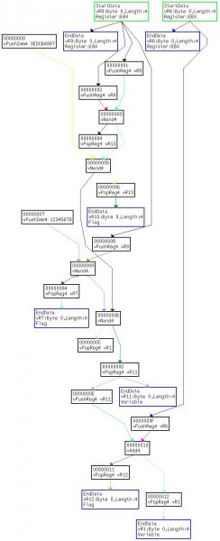
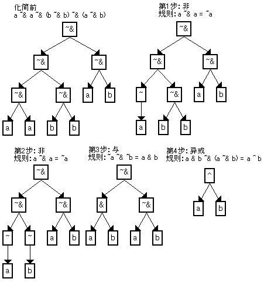

前一段时间一直没上来看，刚把新版做好。昨天想更新，发现原来的帖子不能编辑了，再发一个。
以前的说明可以看原来的帖子
http://bbs.pediy.com/showthread.php?t=143377
2012/08/13更新 v1.3
修复了插入指令时最后一条指令被部分覆盖会造成备份错位的问题。
修复了有时在汇编和插入指令对话框中输入文字会自动设置光标到第一行的问题。
修复了指令窗口撤销选择处修改时选择范围包含没有修改过的指令块可能会发生错误的问题。
修复了当前目录和OD目录不同时读取ollydbg.ini失败的问题。
修复了注释和标签中包含%时可能出错的问题。
修复了一个1.2版由于修改错误导致的对存在连续指令块的程序可能分析失败的问题。
修复了一个由于重定位导致的在DLL中插入指令或在第一条指令汇编可能出错的问题。
修复了启用进入虚拟机中断时在第一条指令设置断点，中断后再取消断点会导致被调试程序出错的问题。
修复了选中启用虚拟机调试但没有选中进入虚拟机时中断，手动执行到执行虚拟指令也不会中断的问题。
增加了对一些DEMO版和1.6X版的支持，只在1.64 DEMO和2.06 DEMO做过测试，不一定完全可用。
去掉了地址在所有模块之外不能分析的限制，现在会添加到未知模块，但是有些内容比如分支表分析可能没有原来准确，而且保存到UDD的断点和分析点等重新加载时可能因为重定位不同而出错。
现在表达式中可以使用ESP了，表示真实ESP。和真实ESP有关的功能必须在分析后才能使用，否则真实ESP为0。
现在所有窗口的显示设置，比如列宽、配色、字体、高亮和其他的选项等都可以自动保存到ollydbg.ini了，保存格式和原来不同，以前的设置都会失效。
现在复制窗口内容时不会复制列宽小于3的列（把列宽拉到最小，变成灰色），和OD相同。
修改了计算返回地址的方法，一些以前计算错误的情况现在也可以计算了。
现在选择了退出虚拟机时加密寄存器的返回地址显示为解密寄存器后返回到的地址，而不是以前显示的解密寄存器代码的地址。
如果选了检查虚拟机完整性可能不能正确计算返回地址或函数调用目标，因为检查结果参与计算，会被认为是变量。
现在地址如果有对应的符号名，会显示在地址栏的地址后面，和OD选项中地址显示格式 HEX，符号 相同。
如果开始分析的地址有标签，虚拟程序会自动添加标签VMP_标签，否则添加标签VMP_地址。
1字节和2字节虚拟寄存器现在可以分低位和高位（vRxBL、vRxBH、vRxWL、vRxWH）。
原来没有发现，其实1字节和2字节寄存器操作指令可以取寄存器中的任何位置，但几乎都是分成两半使用，所以只添加了高位和低位。
现在断点、补丁、分析点可以保存到UDD文件了，重新加载相关模块时可以恢复。
不属于任何模块的记录（模块名显示为"未知模块"）保存到主程序的UDD文件中，但是这些记录无法重定位，重启后有可能因地址改变而不能使用。
如果分析内容所在的模块不是主模块，关闭前一定要在模块中保留一个断点（不是虚拟指令断点）。因为插件只能在ODBG_Pluginsaveudd回调函数中保存UDD文件，如果OD认为模块中没有需要保存的内容就不会调用这个函数，这样保存的数据就会丢失。
还有一个要注意的是保存功能可能和一些插件有冲突，OD规定在ODBG_Pluginuddrecord回调函数中不是自己的插件记录应该返回0，让其他插件处理，可是有些插件不遵守这个规定，其他插件就得不到自己的记录了。我就因此调试了很长时间找不到原因，最后发现有一个插件（CodeRipper）把所有记录都处理了。
插件主菜单添加
重启程序保留分析：选择是否在不关闭OD的情况下重新调试已经分析过的程序保留分析结果，只保留最后一次的分析，调试不同的程序会清除分析结果。这个选项对保存到UDD文件的内容无效，不管是否选中，都会在调试结束时保存。
反汇编后自动分析：是否在反汇编虚拟程序后自动开始分析，如果不自动分析的话也可以在反汇编窗口菜单或按Ctrl+A手动开始分析。
打开补丁窗口：打开补丁窗口，查看所有对程序的修改（汇编、插入指令等）。
打开分析点窗口：打开分析点窗口，查看所有开始分析的地址和分析状态。
虚拟指令信息窗口
这一版虚拟指令信息文件修改比较大，原来的文件已经不能使用了，如果有自己添加的内容的话需要重新添加。
一些指令的描述做了修改，以适应数据分析。
去掉了操作数说明。
现在代码高亮设置可以使用了，使用OD高亮选项中对应的颜色。
添加指令有效选项，如果选中在分析时作为有效指令处理。
添加了写操作数的操作表达式，分析时会使用。
表达式说明：
运算符，按优先级从高到低排序
:（连接）
~（非）
*（无符号乘）、**（有符号乘）、/（无符号除）、//有符号除、%（无符号余数）、%%（有符号余数）
+（加）、-（减）
<<（逻辑左移）、>>（逻辑右移）、>>>（算术右移）、<<>（循环左移）、>><（循环右移）
&（与）
~&（与非）
^（异或）
|（或）
=（赋值）
内存操作用 长度 段前缀:[地址] 的形式，所有表达式可以用BYTE、WORD、DWORD指定长度。
指令窗口
地址：现在可以双击地址栏显示相对或绝对地址
HEX数据：现在可以单击标题切换显示解密前和解密后的数据。选中转移或转移目标指令时会显示转移路径。
注释：现在单击标题可以切换显示引用数据、产生数据、堆栈信息。
引用数据/产生数据：必须先经过分析。可以显示指令引用或产生数据的地址、类型、数值，和指令信息中的读操作数/写操作数对应，可以在信息窗口的数据栏中查看更详细的内容。
堆栈：必须先经过分析。显示指令执行前的vESP、真实ESP、虚拟堆栈长度。
添加了代码高亮，可以在指令信息中设置。无效指令显示灰色或填充指令颜色，计算常量的指令也属于无效指令。
添加了查找指令功能，基本和OD相同，查找的指令序列不能跨指令块，最大20条指令。
ANY n 匹配0到n（十进制）条任意指令，没有操作数时n=1，相邻的会合并，最大20条。
REG和CONST匹配任意寄存器和常量。
添加了图表功能，可以画控制流图和数据流图，生成gdl或vcg文件，可以用VCG TOOL或IDA的WinGraph打开，插件里就不带了。图表不能显示中文，中文注释可能看不见。
控制流图可以看出程序的流程，每个分支和指令块的关系。VMP的指令块一般都很长，如果显示全部指令的话画出来的图非常难看，使用控制流图（部分指令）可以只显示前后10条指令。控制流图中Switch的Case是0到Case数的序号，不是实际检查的值。
数据流图可以显示数据处理流程，指令之间的关系，我是研究化简方法时使用，顺便加进来了。数据流图不能跨指令块，如果指令很多画出来的图可能非常乱，数据流图（指令相关）可以只显示和选择指令相关的内容，会简单一些，选择的指令显示加粗的红色边框。不同的指令或不同的操作数发出的路径使用不同颜色，否则走远了之后可能分不清了。无效或常量节点和路径显示灰色，从灰色节点发出有效路径说明这是一个最终常量。
有几种特殊节点：
StartData：指令块开始时的已知数据。
EndData：指令块结束时的已知数据。
UnknownSource：数据来源不在已知数据中，这并不代表数据未知，只是不在当前分析的已知数据中，比如读内存。
UnknownTarget：数据目标未知，一般是无法计算目标地址。
图表中会显示当前注释栏的内容，注释会使节点变得很宽，比较难看，如果不想显示注释可以把注释栏宽度拉到最小（变灰）。
指令窗口菜单
撤销选择处修改：现在可以恢复添加指令时拆分的指令块了，但是最好在补丁窗口中恢复相关的补丁，否则可能有些问题。
删除插入指令：删除插入指令时添加的指令块，清除指令块中所有断点，恢复内存内容，不能删除正在执行的指令块。
断点-条件记录：设置条件记录断点，使用方法基本和OD相同。
断点-指令条件断点（运行后）：已去掉，可以用指令条件断点代替，弹出窗口中可以设置。
断点-指令条件记录断点：设置指令条件记录断点，使用方法基本和OD的条件断点相同。
查找-指令：查找指令序列，详细信息请看上面查找指令的说明。
查找-常量：查找指令包含的常量，如果已经分析，也包括引用数据和产生数据中的常量。
查找-下个：继续上一次的查找。
查找-所有指令：查找指令序列，把所有找到的内容显示到参考窗口。
查找-所有常量：查找常量，把所有找到的内容显示到参考窗口。
查看-相对地址/绝对地址：把地址栏显示的内容在相对地址和绝对地址之间切换。
查看-加密HEX数据/解密HEX数据：把数据栏显示的内容在解密前和解密后之间切换。
查看-注释/堆栈/引用数据/产生数据：把注释栏显示的内容在注释、堆栈、引用数据、产生数据之间切换。
分析-分析虚拟程序（选择）：分析当前选择的虚拟程序，有很多功能必须分析后才能使用。
分析-分析虚拟程序（全部）：分析当前模块中的全部虚拟程序。
分析-删除分析（选择）：删除当前选择的虚拟程序中的分析结果。
分析-删除分析（全部）：删除当前模块中的全部虚拟程序的分析结果。
图表-控制流图（部分指令）：生成虚拟程序的控制流图，每个指令块只显示前后10条指令。
图表-控制流图（全部指令）：生成虚拟程序的控制流图，显示所有指令。
图表-数据流图（指令相关）：生成指令块的数据流图，只显示和选择的指令相关的内容。
图表-数据流图（指令块）：生成指令块的数据流图，显示所有指令。
指令窗口快捷键
SHIFT+F4：和菜单 断点-条件记录 相同。
CTRL+F：和菜单 查找-指令 相同。
CTRL+L：和菜单 查找-下个 相同。
CTRL+A：和菜单 分析-分析虚拟程序 相同。
信息窗口
添加了数据栏，可以点击标题在信息、指令说明、数据之间切换。
数据：显示指令引用和产生的数据、引用数据的来源指令、产生数据的目标指令。
信息窗口菜单
查看信息/查看指令说明/查看数据：显示内容在信息、指令说明、数据之间切换。
修改寄存器/修改数据：修改选择的寄存器或数据。
跟随：跟随返回或调用地址到OD的反汇编窗口。
数据窗口中跟随地址/数据窗口中跟随数值：跟随内存地址或数值到数据窗口。
反汇编窗口中跟随：跟随数值到指令窗口。
转到数据来源/转到数据目标：转到引用数据的来源指令或产生数据的目标指令。
复制选择部分到剪贴板：复制选中的行到剪贴板。
复制所有内容到剪贴板：复制整个表格到剪贴板。
信息窗口快捷键
SPACE：和菜单 修改寄存器/修改数据 相同。
CTRL+C：和菜单 复制选择部分到剪贴板 相同。
寄存器窗口
现在可以显示真实ESP了。
寄存器窗口菜单
高亮选择寄存器/不高亮选择寄存器：是否在指令窗口中高亮显示选择的寄存器，只支持通用寄存器。寄存器高亮使用代码高亮中非法指令的颜色，如果没有选择代码高亮或没有设置非法指令颜色，寄存器高亮无效
堆栈窗口
现在可以显示真实ESP了。
地址可以在绝对、相对于指定地址、相对于vREG、相对于vESP、相对于真实ESP之间切换。
中断时自动显示的地址可以在锁定、vREG、vESP、真实ESP之间切换。
堆栈窗口菜单
地址-绝对/相对于所选/相对于vREG/相对于vESP/相对于ESP：切换地址显示格式。
自动显示-锁定/vREG/vESP/ESP：切换中断时自动显示的地址。
查找常量：在堆栈中查找常量，只支持4字节。
查找二进制字串：在堆栈中查找连续的数据。
查找下个：继续上一次的查找。
堆栈窗口快捷键
CTRL+B：和菜单 查找二进制字串 相同。
CTRL+L：和菜单 查找下个 相同。
数据窗口
添加了历史记录，可以回到查看过的地址。
数据窗口快捷键
ENTER：跟随选择内容到数据窗口。
+/-：转到上个或下个历史记录。
添加窗口 补丁
显示所有对虚拟程序的修改，包括汇编、插入指令等，这些修改在结束调试时会自动保存到对应模块的UDD文件。也可以在这里对补丁进行操作，比如恢复和激活等。
这里的一个补丁是在相同指令块中连续的代码修改，如果同一个指令块中两个补丁间隔小于5会自动合并。
插入指令会添加5个补丁，包括一个拆分补丁（在插入指令的位置拆分指令块）、一个添加补丁（添加保存插入代码的指令块）、三个修改补丁（两个补丁在拆分的前后修改，一个在添加指令块中修改，写入插入代码），这些补丁是有关联的，最好一起操作。如果想恢复插入指令时做的修改，应该先在补丁窗口中禁用对应的补丁，直接在指令窗口选择撤销选择处修改的话可能因拆分指令块产生问题。
激活从UDD文件中读取的补丁前应先分析补丁所在的虚拟程序，可以在分析点中重新分析。
如果插入指令时添加的指令块在不同模块，禁用类型为添加的补丁后不能激活。
禁用类型为添加的补丁时会禁用相关的修改补丁，激活插入指令块中的修改补丁时应该先激活对应的添加补丁。
禁用或激活插入指令相关的补丁时要先禁用拆分补丁，后激活拆分补丁，否则拆分的第一个指令块最后有不全的指令激活时可能会失败。
补丁窗口
地址：显示补丁的开始地址。
模块：显示补丁所属的模块。
长度：显示补丁长度。
类型：显示补丁类型，修改是虚拟指令的改变，添加是插入指令时添加的指令块，拆分是插入指令时对原指令块的拆分。
状态：补丁目前是否激活。
旧：修改前的指令。
新：修改后的指令。
注释：指令的注释
补丁窗口菜单
反汇编窗口中跟随：跟随补丁开始地址到指令窗口。
应用补丁/恢复原始代码：激活或禁用补丁。
删除记录：删除补丁记录，不会恢复原始代码。
删除模块中的所有记录：删除选择的补丁所属模块中的所有补丁记录，不会恢复原始代码。
复制选择部分到剪贴板：复制选中的行到剪贴板。
复制所有内容到剪贴板：复制整个表格到剪贴板。
补丁窗口快捷键
ENTER：和菜单 反汇编窗口中跟随 相同。
SPACE：和菜单 应用补丁/恢复原始代码 相同。
DELETE：和菜单 删除记录 相同。
CTRL+C：和菜单 复制选择部分到剪贴板 相同。
鼠标双击：和菜单 反汇编窗口中跟随 相同。
添加窗口 分析点
显示所有开始分析的地址，比如分析虚拟机、分析虚拟程序时选择的地址，分析所有导出函数时每个函数的地址等，这些内容在结束调试时会自动保存到对应模块的UDD文件。也可以在这里对分析点进行操作，比如重新分析等。
分析点窗口
地址：开始分析的地址。
模块：地址所属的模块。
类型：开始分析的类型，虚拟机或虚拟程序。
分析结果：是否分析成功，现在只要有一点不确定的就会显示失败，不一定都是分析错误。
vEIP/指令表：如果分析完成，显示虚拟程序的初始vEIP或虚拟机的指令表地址，如果有多个虚拟机只显示第一个。
分析点窗口菜单
跟随地址：跟随开始分析的地址到OD的反汇编窗口。
反汇编窗口中跟随vEIP：跟随虚拟程序的初始vEIP到指令窗口。
查看虚拟指令：打开虚拟指令窗口，查看相关虚拟机的虚拟指令处理程序。
删除记录：删除选择的分析点记录。
删除模块中的所有记录：删除地址所属的模块中的所有分析点记录。
重新分析：重新分析虚拟机或虚拟程序。
复制选择部分到剪贴板：复制选中的行到剪贴板。
复制所有内容到剪贴板：复制整个表格到剪贴板。
分析点窗口快捷键
ENTER：和菜单 跟随地址 相同。
SPACE：和菜单 重新分析 相同。
DELETE：和菜单 删除记录 相同。
CTRL+C：和菜单 复制选择部分到剪贴板 相同。
鼠标双击：和菜单 跟随地址 相同。
这次主要添加数据分析功能，可以分析每条指令引用和产生的数据地址、类型、数值，生成数据流图，计算真实ESP，化简常量和识别垃圾指令等。现在可以化简全部常量，标记大部分无效的和计算常量用的指令，没有用的指令越多化简率越大。这些指令在反汇编窗口和数据流图中显示为灰色，分析时可以不用看这些内容，减少了很大的分析量，普通保护化简率一般在20%~50%，最大保护+变形有时可以超过90%。现在几乎可以把最大保护化简到最小保护的程度，最小保护大部分都是正常计算需要的指令，化简效果差一点，只能以后做算法分析了。但是数据分析可以计算出指令执行前后的数据地址、类型、数值等，对分析还是有些帮助的。通过数据流图可以看出VMP的数据流一般都很长，经常是一个数压栈之后几十甚至几百条指令后才使用，在这之间堆栈会不停的改变，手动分析的话很难知道数据是哪里来的，这也是VMP强大的地方之一。现在通过看信息窗口中的数据栏和数据流图可以很容易找到这些数据的来源，简单的数据类型比如常量和vESP等分析时还会自动计算。
分析后会在log窗口记录化简常量数、无效指令数、计算常量的指令数、化简率等，可以看出化简的程度。现在认为对程序没有影响或只隐含修改vESP的指令是垃圾指令，有效结果全部为常量的指令是计算常量的指令，这些指令替换成AddVEsp或vPushImm不会对程序功能造成影响，可以不用分析，只看最后的结果就可以。
如果内存属性为只读或可执行，或包含虚拟机相关内容、输入表、资源等内容在数据分析时会被认为是常量，这不一定完全正确，有时会把变量当作常量或者相反，现在我也没有更好的方法了。
分析内容中显示的vESP和ESP是相对虚拟程序开始时的偏移，开始时vESP和ESP都为0，堆栈长度是初始堆栈内容长度，后面根据经过的指令修正，不一定和执行时的寄存器对应。
如果修改过指令的话（汇编、插入指令）最好重新反汇编后在分析，否则可能有一些问题，尤其是在修改真实ESP操作和转移相关的代码后，可以在分析点窗口选择重新分析。
有人说要添加旧版本支持，现在添加了一些，只在1.64 DEMO版做过测试，不一定完全可用。这个插件只是为了研究分析方法，也不想做成一个完整的破解工具，旧版本比如1.2结构差距很大，也不准备再添加支持了。
下面简单说一下数据分析的原理，这一版从原来的基础上增加了两遍分析，一共三遍。
第一遍 反汇编
反汇编虚拟指令，分析转移类型和目标，恢复程序结构，生成控制流图。
跟原来一样，遇到新指令块后反汇编，计算转移目标继续分析，按深度优先遍历顺序排序。如果程序逻辑有冲突，比如条件不成立时的转移目标不是下一个指令块，再单独作出调整。
第二遍 数据分析
做一次向后的数据跟踪，生成数据流图，分析数据地址、类型和数值，分析堆栈相关信息和真实ESP。
跨指令块分析：
维护一份已知数据列表，记录数据地址、类型、数值、来源（初始数据或产生数据的指令地址），程序开始的时候只有初始堆栈里的内容，vESP、真实ESP设为0。遇到新指令块时如果所有除循环以外的来源都已分析，就把多个来源结束时的数据合并，设为指令块开始时的数据，做指令块内分析。合并时如果发现地址有重叠但类型或数值不同，作为变量处理。现在没有处理循环，遇到循环不会继续分析，这可能会产生一些问题，比如 a=0; for(i=0;i<5;i++)a++; 分析结果可能会是a=1而不是a=5
指令块内分析：
从第一个指令开始向后跟踪，根据已知数据设置每个指令的引用数据、数据来源、执行前的堆栈信息，根据指令执行结果修正已知数据。如果一个指令引用不同类型的数据计算，结果为合并后的类型，现在是取未知程度最高的类型。规则是这样的：除真实寄存器外的类型与常量计算类型不变，堆栈偏移、标志与自己或常量计算类型不变，否则为变量，真实寄存器、变量和任何类型计算结果都是变量。生成指令块结束时的数据，用于跨指令块分析。
分析真实ESP：
分析真实ESP是基于这样几个假设：vPopVEsp、vPopVSp、vRet执行时堆栈中只有要弹出的内容，vPopVEsp、vPopVSp只用来修改真实ESP，这一般都是成立的。为了简单，还认为指令块开始时的堆栈长度和进入虚拟机时相同（JT、JNT目标会多一个要弹出的标志），其实应该根据结束时的堆栈长度来计算，这里直接认为是固定长度了，这样就可以和数据分析放在一遍，如果计算的话还要从后向前再分析一遍，比较麻烦。
VMP中真实ESP操作大部分都有固定的模式，分析起来容易一些，但是PUSH和POP会在虚拟堆栈为空时直接用vPush和vPop，有些时候无法准确识别。现在的方法是在指令块中从后向前查找vPopVEsp、vPopVSp、vRet，这些指令执行时堆栈长度是确定的。从这里向前修正堆栈长度直到前一个可以确定长度的指令停止，中间遇到堆栈长度小于0的情况说明是真实PUSH。如果停止时修正后的堆栈长度大于正常堆栈长度，说明有真实POP，再向后修正一遍直到下一个可以确定长度的指令。这可能并不总是正确，还有一些情况比如PUSH后再POP但是中间没有vPopVEsp，不会被看作真实堆栈操作，但是一般没有什么大问题。
第三遍 识别无效指令
标记垃圾指令（不会对程序造成影响的指令），标记计算常量用的指令，计算最终常量（数据来源全部为计算常量的指令，数据目标是有效指令）的数量和化简率。
跨指令块分析：
从第一个指令块开始递归分析所有目标，分析后检查当前指令块的结束数据是否有和目标指令块有效的开始数据重叠的部分，如果有说明数据有效，否则是无效数据。设置结束数据的有效性，做指令块内分析，把所有指令块分析结果相加计算化简率。现在算出的化简率是无效指令+计算常量的指令占总指令数的比例，在手动分析时可以不用考虑这些指令。
指令块内分析：
有了数据流图识别垃圾指令就很简单了，从最后的指令开始，如果一个指令有流向有效指令或结束数据的路径，标记为有效，否则就是垃圾指令。如果一个计算指令（比如vAdd、vNand等）有效结果全部为常量，常量目标为有效指令，说明这是一个最终常量，向前路径上所有指令都是计算常量的指令（不包括那些有数据流分支到其他有效指令的指令）。设置指令块开始时的数据是否有效，用于跨指令块分析。
2013/01/30更新 v1.4
修复了遇到不在汇编指令信息中的联机指令会分析失败的问题。
修复了一个识别无效指令的错误。
修复了一个分析转移类型的错误。
优化了计算转移目标和类型的方法，加快反汇编阶段的速度。
插件自动生成的注释现在不会覆盖已有的内容了。
条件记录断点可以记录多个表达式了，用;分隔。
现在可以自动分析除异常处理以外的所有控制结构了，包括动态转移、普通调用、虚拟机内调用、联机指令等，异常处理和编译器有关，先不添加支持了。
可以自动分析动态转移的所有目标了。
可以在最大保护下计算调用和返回的地址了，会自动标出解密寄存器、解密输入表等内容。
可以分析调用和联机指令后面的代码了，可以自动反出重新进入虚拟机后的内容，组合成完整的程序。
数据分析时有未知的vESP改变、指令块来源堆栈信息不同现在不算分析错误了，只添加注释和记录。
记录高亮显示，分析后可以看看记录，遇到这种情况最好处理一下，否则分析可能不准确。大部分情况是因为调用ESP改变计算错误或虚拟机内调用寄存器没有设置导致的，一般可以通过添加分析提示来解决。
数据分析现在可以处理循环了，对有循环的程序分析更准确。遇到循环时会重复分析所有已分析过的内容，如果循环较多或有深层嵌套的话可能比较慢。
添加转移类型：连接，表示无条件转移作为连接用，也就是说转移目标只能通过这个转移到达。乱序变形过的程序中会有大量这种转移，普通程序中有时也有，这样的转移会尽可能让目标接在后面，分析时可以选择作为一个指令块处理，避免本该相连的操作被截断。
优化了恢复程序结构的方法和对循环的处理，比原来整齐一些了。
现在在分析点窗口重新分析和反汇编窗口分析虚拟程序也使用新线程，不会阻断操作。
现在分析过程中可以按Ctrl+Z取消分析，因为是直接结束分析线程，可能造成内存泄漏和插件不稳定，尽量少用。可能中断在分析的中间状态，下次分析前最好重新反汇编
添加了分析提示功能，可以修正不准确的分析，提供一些插件不能自动分析的信息。
分析提示作为注释添加，包含在/*和*/之间，多个提示用";"分隔，比如/*esp(8);stackRef(4,4)*/。不想加单独的设置方式了，可能用着有些不方便。
分析提示被插件解析为表达式，和算法分析时使用的表达式格式相同，每个提示是一个函数。数字格式为16进制，如果第一个字符是字母必须加0，如0C4、-0A8等，可以使用运算符，其实负数就被解释为单目-和数字。
如果输入的分析提示不符合格式或表达式解析错误不会通知用户，直接作为没有提示处理。
分析提示保存方式和注释相同，在程序关闭时由od自动保存到udd文件中，如果注释所在的模块不是主程序，请保留一个断点（不是虚拟断点，虚拟断点在停止调试时自动清除），以免丢失注释。
在DLL中所有内存地址（数据地址、转移目标等）都是重定位前的，因为注释设置后不会改变，但是DLL每次加载地址可能不同，插件会自动重定位，所以需要重定位的分析提示最好不要跨模块使用，否则结果可能不正确。
设置分析提示后需要重新执行相关的分析步骤来使提示生效，比如调用目标需要重新反汇编，数据有效需要重新数据分析，变量名需要重新算法分析。
下面的提示在反汇编时使用
转移目标，在vJmp注释
格式：jmp(目标1,目标2...)
示例：/*jmp(401000,402000,403000)*/
功能：提示转移目标，不会改变转移类型，请注意目标数量应该和转移类型相符，否则可能出错。但一个转移目标直接作为无条件转移处理，可以用于清除垃圾分支。
联机指令，在vRet注释
格式：online(联机指令地址,返回地址)
示例：/*online(401000,402000)*/
功能：提示插件vRet用作联机指令，返回地址是后续虚拟程序入口，不是虚拟机内的地址。
函数调用，在vJmp、vRet注释
格式：call(函数地址,返回地址)
示例：/*call(401000,402000)*/
功能：提示插件vJmp或vRet用作函数调用，vRet是普通调用，vJmp是虚拟机内调用，返回地址是后续虚拟程序入口，不是虚拟机内的地址。
下面的提示在数据分析时使用
设置vESP，在指令注释
格式：vEsp(vESP)
示例：/*vEsp(20)*/
功能：提示指令执行前的vESP，如果是指令块的第一条指令，也设置指令块的开始vESP。
指令是否有效，在指令注释
格式：valid(是否有效)
示例：/*valid(0);valid(1)*/
功能：提示指令是否有效，0为无效，非0为有效。
退出虚拟机后数据有效，在vJmp、vRet注释
格式：exitValid(是否有效)
示例：/*exitValid(0);exitValid(1)*/
功能：提示退出虚拟机后可访问的数据是否有效，0为无效，非0为有效。包括调用、联机指令、退出虚拟机，也包括虚拟机内调用目标可访问的数据。如果只是函数的一部分被加密，最好在退出虚拟机时添加这个提示，函数改变了传进来的参数或写常量地址内存最好也在退出时加上，当然也可以在调用时使用，这样就不需要填stackRef和memRef了。由于大部分情况下退出后可访问的数据都有效，分析前如果不存在这个提示会自动添加exitValid(1)，如果不需要可以改为exitValid(0)，下次就不会再添加了。
引用数据常量，在指令注释
格式：const(引用数据,常量值)
示例：/*const(1,12345678)*/
功能：提示指令的引用数据为常量，这个提示会中断数据流，如果原来指令引用其他指令的数据，设置提示后不会再引用，数据流前面的指令可能因此而无效。反汇编计算转移目标和类型时也会使用这个提示。
常量内存，在内存块开始注释
格式：memConst(是否为常量,地址,长度)
示例：/*memConst(0,401000,20);memConst(1,402000,1000)*/
功能：提示内存区域包含的内容是否为常量，0不是常量，非0是常量。VMP在选择隐藏常量和检查完整性后会读取虚拟机的一部分作为常量使用，现在认为内存属性为只读或可执行，或包含虚拟机相关内容是常量，但这并不总是正确，可以用这个提示来解决。注释位置必须在包含指定地址的内存块开始处，就是在od内存窗口中显示的开始地址。
虚拟指令改变堆栈，在指令注释
格式：vStackModify(地址,长度[,内容表达式])
示例：/*vStackModify(4,1);vStackModify(-8,4,a+b)*/
功能：提示指令改变了堆栈数据，如果不填写内容表达式的话只把指定地址从已知数据中删除，否则把表达式添加到已知数据。新数据的来源设为未知，如果覆盖了已有的数据，可能导致产生这个数据的指令无效。如果指令写入地址不是常量的堆栈而你又知道地址的话最好填上这个提示，否则后面分析到这个地址的时候可能不知道数据已经改变。
虚拟指令改变内存，在指令注释
格式：vMemModify(地址,长度[,内容表达式])
示例：/*vMemModify(401000,1);vMemModify(402000,4,a+b)*/
功能：提示指令改变了内存数据，如果不填写内容表达式的话只把指定地址从已知数据中删除，否则把表达式添加到已知数据。新数据的来源设为未知，如果覆盖了已有的数据，可能导致产生这个数据的指令无效。如果指令写入地址不是常量的内存而你又知道地址的话最好填上这个提示，否则后面分析到这个地址的时候可能不知道数据已经改变。
下面的几种分析提示处理被调用函数对数据的影响，是最重要的提示。由于插件不会自动分析被调用函数，分析时可能缺少一些信息，为了数据分析准确，请尽量填写，插件也会自动填写一部分。函数默认不引用和清除任何数据。函数如果改变了数据，应该标记数据为已改变，这样会断开调用前后数据之间的关系，也就是说调用前的值不会传播到调用后，调用后的数据是否有效也不会传播到调用前。函数如果在改变数据前使用了数据，应该标记为引用，这样的数据被认为是有效数据。
函数改变ESP，在调用目标注释
格式：esp(改变值)
示例：/*esp(8);esp(-0C)*/
功能：提示被调用函数或联机指令对堆栈指针的改变，这是非常重要的提示，如果填写错误的话重新进入虚拟机后堆栈中的数据会错位。由于这个提示很重要，插件在分析时会自动填写，但是自动分析的结果不一定准确，最好自己检查一下。如果不填写的话调用默认为4（弹出返回地址，没有或不弹出参数），联机指令默认为0。如果函数本身不改变ESP，返回指令是RETN改变为4，RETN n改变为n+4。虚拟机内调用可以参考数据分析得到的堆栈信息，一般是被调用函数的结束vESP-初始化数据数*4，这也是插件自动分析的方法。也可以调试观察，最简单的方法是在调用前后记下vESP，和分析结果比较，比如下面的联机指令
005B9271 |. /2E ||vRet vESP=-828; ESP=-82C; 堆栈长度=0030
005A9FF0 |> \0B ||vPopReg4 vR8 vESP=-82C; ESP=-82C; 堆栈长度=0034
调试观察到的vESP调用前后分别是13F768和13F760，减了8，但分析结果是减4，少减了4，所以应该添加提示/*esp(-4)*/。要注意如果没有分析提示的话调用默认为4，联机指令默认为0，如果是没有提示的调用少加了4，就应该填+8。虚拟机内调用第一次分析时不能自动计算被调用函数对ESP的改变，因为要在当前函数分析完成后才分析被调用函数，如果要自动计算的话，等被调用函数做完数据分析后再分析一次就可以了。
寄存器在初始堆栈中的偏移，在虚拟机内调用入口注释
格式：initReg(寄存器,偏移)
示例：/*initReg(eax,4);initReg(efl,0C)*/
功能：提示虚拟机内调用的函数真实寄存器在初始堆栈中的偏移，开始时的vESP为0。如果不填写这个提示的话无法建立调用前后寄存器之间的关系，不能跨调用传播寄存器数据。如果知道函数入口，可以先从入口分析，根据数据分析的结果很容易就能看出初始堆栈内容，否则只能自己判断了，可以根据调用函数的vJmp前压栈的数据或被调用函数退出时压栈的数据来判断，比如退出前有
0040B33A |. E4 vPushReg4 vR7 EDI DWORD v10 = unknownInit6
说明unknownInit6对应EDI，向前找到
0040CD87 |. E5 vPopReg4 vR7 DWORD _t10 = unknownInit6
这个指令引用的堆栈是18，EDI在初始堆栈中的偏移就是18，当然函数改变了寄存器的话就不能用这种方法了。设置这个提示后初始数据中的未知内容（unknownInit）也会被替换为对应的寄存器。
函数参数，在调用目标注释
格式：arg(参数序号[,参数名])
示例：/*arg(1);arg(2,arg2)*/
功能：提示函数的参数，有这个提示就不用填写stackRef了，参数序号*4就是参数引用的堆栈地址，长度为4，分析时认为函数引用这个堆栈数据。在分析结果中会标出这些参数，如果不填写参数名的话默认为ARGn。插件在添加esp提示时会自动添加这个提示，大于4的ESP改变是弹出的参数，如果是调用方清除参数的话不会标记参数。请注意只有在esp和arg提示都不存在的情况下才会自动添加这个提示，只有esp提示是不会自动添加arg的，如果函数没有使用一些参数你可以把arg提示删除，只保留esp提示，下次就不会自动添加了。
函数引用堆栈，在调用目标注释
格式：stackRef(偏移,长度)
示例：/*stackRef(8,4);stackRef(-0C,4)*/
功能：提示被调用函数引用的堆栈数据，这样的数据被认为有效。偏移是相对真实ESP的，在被调用函数入口默认为0。虚拟机内调用也是真实ESP偏移，注意插件自动分析的到的堆栈信息中真实ESP不一定准确，设置虚拟机内调用引用的堆栈时以实际的值为准，开始时虚拟堆栈只有初始化数据，去掉这些数据就是真实ESP。如果设置了对应的arg提示就不需要这个提示了。
函数引用内存，在调用目标注释
格式：memRef(地址,长度)
示例：/*memRef(401000,4)*/
功能：提示被调用函数引用的内存数据，这样的数据被认为有效。
函数改变堆栈，在调用目标注释
格式：stackModify(偏移,长度[,内容表达式])
示例：/*stackModify(4,1);stackModify(-8,4,a+b)*/
功能：提示被调用函数改变了堆栈数据，如果不填写内容表达式的话只把指定地址从已知数据中删除，否则把表达式添加到已知数据，会中断数据流。偏移是相对真实ESP的，见stackRef的说明。
函数改变内存，在调用目标注释
格式：memModify(地址,长度[,内容表达式])
示例：/*memModify(401000,1);memModify(402000,4,a+b)*/
功能：提示被调用函数改变了内存数据，如果不填写内容表达式的话只把指定地址从已知数据中删除，否则把表达式添加到已知数据，会中断数据流。
函数改变寄存器，在调用目标注释
格式：regModify(寄存器[,内容表达式])
示例：/*regModify(eax,a+b);regModify(efl)*/
功能：提示被调用函数改变了寄存器，如果不填写内容表达式的话只把指定地址从已知数据中删除，否则把表达式添加到已知数据，会中断数据流。插件在添加esp提示时会自动添加eax改变提示，因为大部分函数都用eax作为返回值，如果不需要可以把提示删除，只保留esp提示，下次就不会自动添加了。
下面的提示在算法分析时使用
变量名，在指令注释
格式：var(产生数据,变量名)
示例：/*var(1,var1);var(2,"变量1")
功能：设置指令产生数据的变量名，作为命名变量处理，同时设置数据和指令为最终操作。不支持中文变量名，但可以用字符串代替。最好避免和插件自动设置的变量重名。
操作表达式，在指令注释
格式：exp(产生数据,表达式)
示例：/*exp(1,a+b);exp(2,GetBytes(v0,1,2)^v1+v2)
功能：设置指令产生数据的表达式。
表达式添加
字符串：在两个"中间，分析时的处理方式基本和变量相同。字符串中可以使用任何字符。
单目-运算符（负数）：优先级和~（非）相同。
符号扩展函数（SigExt12、SigExt14、SigExt24、SigExt48）：由于原来表达式对符号扩展处理有问题，现在添加了符号扩展函数，如果不使用符号扩展函数默认为0扩展。
取字节函数（GetBytes、LoByte、HiByte、LoWord、HiWord、LoDWord、HiDWord）：截取表达式的一部分字节，GetBytes可以截取任意范围内容，格式为GetBytes(表达式,位置,长度)，其他函数格式为LoByte(表达式)、HiByte(表达式)...。
扩展字节函数（ByteToWord）：表示BYTE扩展为WORD使用。VMP中BYTE数据都会作为WORD保存，高位不使用（也有少数情况作为0扩展来使用），所有这种操作都应该使用ByteToWord函数，否则表达式中会出现大量LoByte，现在定义了两个化简规则，LoByte(ByteToWord(a))=a、ByteToWord(ByteToWord(a))=ByteToWord(a)，可以清除这些多余的操作。
只有取字节、符号扩展可以计算，扩展字节函数大部分情况下高位是无效的，但是计算结果一般都是保存在EAX中再写入堆栈，而EAX在执行虚拟指令前保存的是指令操作码，除AL外都是零，这里直接按0扩展来计算。
双精度移位函数(Shld、Shrd)现在也可以计算了，上一版因为不能计算这两个函数导致一些数据计算失败。
可以计算的函数参数如果是常量，分析时会直接计算出结果，否则不处理。
表达式不支持中文，但可以出现在字符串中，比如可以用 "变量1" 来替代 变量1 ，效果是一样的。
插件主菜单添加
编辑化简规则
打开编辑化简规则窗口，可以编辑和测试化简规则。
分析选项-分析虚拟机内调用
是否在分析完当前虚拟程序后自动分析虚拟机内调用的函数，从虚拟机内调用入口开始分析，不包括初始化部分，已经分析过的不重新分析。
分析选项-识别无效指令
是否在数据分析后识别无效指令，无效指令在反汇编窗口显示灰色或不显示，算法分析不处理这样的指令。不识别无效指令会减慢算法分析阶段的速度，分析结果也有很多没有用的内容，如果不是分析错误的话，建议始终选中，即使分析错误也可以用分析提示来解决。
分析选项-算法分析
是否进行算法分析，可以生成和化简指令操作表达式。
分析选项-化简表达式
算法分析时是否化简指令的操作表达式，可以使算法分析结果更简单，除非遇到化简错误要看化简前的表达式，建议始终选中。如果不化简请限制最大表达式长度，否则可能会产生很长的表达式导致速度变慢或失去响应。
分析选项-化简无效数据
算法分析时是否化简无效数据的表达式，不化简可以加快算法分析的速度，尤其是垃圾指令较多时会有大幅提升。如果不是分析错误的话无效数据都是没有用的，可以不用化简，即使选择化简也不会做变量相关的处理。
分析选项-合并连接指令块
分析时是否把JMP连接起来的指令块作为一个整体处理，在程序经过乱序变形后指令块可能被垃圾转移分隔，选择后可以生成更少的变量和更长的操作表达式。会增加算法分析时间，但由于变量比原来要少，可以减少整理变量的时间。可能导致连接指令块的数据流图开始数据和结束数据不准确，分析进度条不准确。
分析选项-清除交汇函数
算法分析后是否清除交汇函数，把由控制流合并产生的交汇函数交汇的数据作为一个变量处理。带交汇函数的代码比较复杂，变量较多，但更容易看出数据来源。
分析选项-整理变量
算法分析后是否整理变量，可以清除多余的变量，按显示顺序为变量命名。
分析选项-最大表达式长度
限制表达式最大长度（表达式树中的节点数），0为不限制，表达式过长会占用大量资源，可能导致速度变慢或失去响应。
dump窗口菜单添加
分析虚拟程序
从指定的vEIP开始分析虚拟程序，不分析入口部分。需要填写vKEY、虚拟机指令表地址、重定位等信息，插件会自动填写vKEY和重定位，默认vKEY等于vEIP-重定位，如果在指令块第一条指令开始分析的话这是正确的，否则应该手动填写。尽量避免在指令块的中间开始分析，这可能导致一些问题。
指令窗口
反汇编：现在单击列标题可以在显示全部指令、有效指令、最终操作之间切换。
注释：添加了表达式，可以通过菜单或点击列标题切换，显示指令产生数据对应的操作表达式，详细内容请看上一版说明中对表达式的介绍。
现在有3种显示模式，全部指令、有效指令、最终操作。
显示全部指令和原来相同，所有指令都显示。
显示有效指令会把无效指令和计算常量的指令替换成vPushImm和AddVEsp，必须先做数据分析。
显示最终操作只显示产生最终操作表达式（定义非临时变量）的指令，注释栏的表达式也只显示最终变量，必须先做算法分析。
非最终操表达式作显示为灰色或填充指令颜色。
od的表格窗口只能显示TEXTLEN（256）个字符，表达式可能显示不全，完整内容请在信息窗口中查看。
显示有效指令和最终操作时会显示每个指令块的第一条和最后一条指令，即使这个指令不是有效指令或最终操作也会显示。
单步调试时可以只在当前显示列表中的指令上中断，和普通调试时相同。vJmp和vRet如果用作调用或联机指令，调试时用单步步过可以跳过，单步步入会进入。
用户对代码的修改如果不重新反汇编或分析的话不会对全部指令以外的显示模式造成影响。
一些功能只有在显示全部指令时才能使用，比如二进制、数据流图、撤销修改、汇编、插入指令、删除插入指令等。
现在可以跟随vCall了。
可以解码的常量会添加解码注释，比如属于已知模块的地址、标签、字符串等。
跟随或转到地址时不在当前指令列表中会自动切换显示模式，优先使用指令较少的模式，顺序为最终操作、有效指令、全部指令。
指令窗口菜单
查找-表达式：查找包含指定内容的表达式，只在当前显示的指令列表中查找，忽略大小写和空白字符。查找时会把表达式转成字符串处理，如果指令很多可能比较慢。
查找-所有表达式：查找所有包含指定内容的表达式，显示到参考窗口。
信息窗口
表达式：显示指令产生的表达式、交汇函数、变量定义位置等。
变量定义位置只显示在当前指令可能的取值，不能到达这里的定义不显示。如果指令窗口正在显示最终操作指令，可能有一些定义不在显示列表中。
由于od的表格窗口每行最多只能显示TEXTLEN（256）个字符，长内容会分成多行，后续行前加4个空格，选择时会自动选择所有相关的行，复制出来的内容是完整的。
信息窗口菜单
查看表达式：显示内容切换到表达式。
转到变量定义：转到变量的定义位置。
信息窗口快捷键
ENTER：根据选择项目的类型转到指定地址，如果有多个地址优先使用第一个。
参考窗口
注释栏可以显示表达式了，点击列标题切换显示注释或表达式，在设置参考窗口时会根据内容自动选择。
添加窗口 编辑化简规则
可以在这里编辑和测试化简规则，做算法分析时会使用。
设置时尽量把长的规则放到前面，因为是顺序查找，只要有一个规则匹配成功时就停止，长规则很可能包含短规则，如果短规则在前面，长规则可能永远不会匹配。
匹配前会先化简子表达式，也就是表达式树中的子节点，设置规则是要注意这一点。比如a&b应该是(a~&a)~&(b~&b)，但是由于是在表达式树上检查，而且子节点先化简了，到化简中间的与非时已经变成了~a~&~b。如果不太确定表达式结构的话，可以使用测试-表达式树生成表达式树图形。
每个变量在一个规则中只能对应相同的表达式，变量被关联到第一个匹配成功的表达式，后面有不同匹配失败，比如x与a+b匹配成功，以后就只能匹配a+b。
不同变量可匹配相同表达式，比如a~&b可以匹配a~&a。
如果运算符的操作数可以交换，比如&、+等，匹配时不考虑顺序，可交换运算符的标志函数参数也不考虑顺序。比如a~&b可以匹配a~&b和b~&a，但a<<b只能匹配a<<b。
~变量可以匹配常量，比如~a~&~b可以匹配8FF ~& ~EFL，变量a匹配0FFFFF700，变量b匹配EFL，化简结果是0FFFFF700 & EFL。
打开文件：选择并打开化简规则文件，加载规则信息。如果文件中有错误会提示。
保存文件：把化简规则保存到文件，修改或添加规则后不会自动保存到文件，需要手动保存。
添加：把化简规则添加到当前选中的位置。
删除：删除当前选中的规则。
保存：保存修改过的信息，改变不会自动保存，修改后需要点击保存按钮，选择其他规则自动放弃修改。
规则名：化简规则名称。
匹配模式：要匹配的表达式模式，其中的变量可以匹配任意内容。
替换为：匹配成功后要替换的表达式，其中的变量代入匹配模式中对应变量匹配的内容。
测试-表达式：输入要测试的表达式，结果也在这里显示。
测试-当前规则：化简测试时只使用当前选择的规则。
测试-所有规则：化简测试时使用所有规则；
测试-化简：化简输入的表达式，显示化简步骤，如果表达式中有常量，最好用BYTE、WORD、DWORD等指定长度，否则默认按64位处理。
测试-表达式树：生成表达式树图形，保存为gdl或vcg文件，可以用VCG TOOL或IDA的WinGraph打开。
这次主要添加算法分析功能，可以分析程序算法，生成和化简指令的操作表达式，反出的结果类似高级语言的表达式，可以化简掉很多内容。指令窗口注释栏切换到表达式上可以显示分析结果，非最终操作显示灰色。也可以选择只显示最终操作指令，点击反汇编栏的列标题可以切换，这时显示的指令只是产生最终操作的位置，不是连续的，单独看指令已经没有什么意义了。表达式是根据指令信息中的操作数操作定义的，详细信息请看上一版说明。现在的变量定义不对应存储位置，只对应计算步骤，也就是说同一个地址在不同的计算中可能有不同的变量名。
t0：临时变量，数据分析时每个操作设置临时变量。
v0：最终变量，非临时的计算。
s0：堆栈变量，读不在已知数据中的堆栈。
m0：内存变量，读不在已知数据中的内存。
unknownInit0：未知的初始化数据（程序执行前虚拟堆栈中未知的内容）。
nonentity：部分来源路径上不存在的数据，控制流交汇时如果有部分路径不存在指定的数据设为这种变量。
entryVMEax_401000：调用或联机指令后重新进入虚拟机时被改变而且数据未知的寄存器，数字是重新进入的地址。
entryVMMem401000_404000_4：调用或联机指令后重新进入虚拟机时被改变而且数据未知的内存，数字是重新进入的地址、内存地址、长度。
entryVMStack401000_18_4：调用或联机指令后重新进入虚拟机时被改变而且数据未知的堆栈，数字是重新进入的地址、vESP偏移、长度。
longExp401000_1：长表达式，表达式树中的节点数超过设定值，继续分析的话可能速度变慢，直接截断作为一个变量，被截断的表达式可能不能正确化简。数字是指令地址、产生数据索引。
其他名称的变量属于命名变量，可能是用户通过分析提示命名，也可能是插件自动命名，比如EAX等。vESP偏移在表达式中作为常量处理。
前面带_的是整理前的变量，如果不选择整理变量的话，可能有很多多余的变量，而且变量定义顺序和显示顺序不一定相同，整理前的变量是按宽度优先遍历顺序定义的。即使选择了整理变量，也不会整理临时变量和无效数据中的变量。退出虚拟机后（包括调用）可以访问的数据前会加EXIT，调用参数、退出虚拟机时的真实寄存器等也会标记出来。
由于变量是根据计算步骤定义的，一个地址在不同分支中的使用不是同一个变量，后面两个分支合并时变量会有多个定义，这里使用了一个交汇函数，表示在这一点变量所有可能的取值，比如Cross(0, v1)。如果选择了清除交汇函数，会把同一个交汇中的变量命名为相同的名称，这样的代码简单一点，变量也较少。其他函数看名称应该就能明白，比如Stack是读堆栈，AddFlag是加法标志等。
一些版本的VMP中vPushReg4和vPopReg4有点不一样，由于原来插件中硬编码了一些内容，导致这个问题不能通过修改指令信息来解决，现在已经可以了，只要把特征中的AND AL,3C去掉，指令数据改为寄存器就可以解决。原来的指令可以改名后保留，需要时再改回去，否则原来可以分析的程序又不能用了。
有的时候调试时od会提示可疑的断点，单步一次弹出一个窗口，也没有选项能关掉，这时可以给od打个补丁，下面是1.10版的地址。
00419596 . /74 05 JE SHORT Ollydbg.0041959D //********************nop 00419598 . |83F8 13 CMP EAX,13 0041959B . |75 30 JNZ SHORT Ollydbg.004195CD //********************jmp 0041959D . \6A 08 PUSH 8 ; /Arg5 = 00000008 0041959F . 6A 00 PUSH 0 ; |Arg4 = 00000000 004195A1 . 6A 00 PUSH 0 ; |Arg3 = 00000000 004195A3 . 57 PUSH EDI ; |Arg2 004195A4 . 6A 00 PUSH 0 ; |Arg1 = 00000000 004195A6 . E8 6D400100 CALL Ollydbg._Setcpu ; \_Setcpu 004195AB . 83C4 14 ADD ESP,14 004195AE . 68 24210000 PUSH 2124 ; /Style = MB_YESNO|MB_ICONQUESTION|MB_DEFBUTTON2|MB_TASKMODAL 004195B3 . 68 40274B00 PUSH Ollydbg.004B2740 ; |Title = "可疑的断点" 004195B8 . 68 47264B00 PUSH Ollydbg.004B2647 ; |Text = "看上去您想在一些命令的中间位置或数据中设置断点. 如果真是这样的话, 这些断点将不会执行并可能严重影响调试的程序. 您真的希望在此设置断点吗?" 004195BD . 8B15 7C3B4D00 MOV EDX,DWORD PTR DS:[4D3B7C] ; | 004195C3 . 52 PUSH EDX ; |hOwner => NULL 004195C4 . E8 4D5F0900 CALL <JMP.&USER32.MessageBoxA> ; \MessageBoxA 004195C9 . 8BF0 MOV ESI,EAX 004195CB . EB 55 JMP SHORT Ollydbg.00419622 004195CD > 807D F3 00 CMP BYTE PTR SS:[EBP-D],0 004195D1 . 75 07 JNZ SHORT Ollydbg.004195DA 004195D3 . BE 06000000 MOV ESI,6 004195D8 . EB 48 JMP SHORT Ollydbg.00419622 004195DA > 33C0 XOR EAX,EAX 004195DC . 8A45 F3 MOV AL,BYTE PTR SS:[EBP-D] 004195DF . 83F8 1D CMP EAX,1D 004195E2 . 74 0A JE SHORT Ollydbg.004195EE 004195E4 . 83F8 1E CMP EAX,1E 004195E7 . 74 05 JE SHORT Ollydbg.004195EE 004195E9 . 83F8 1F CMP EAX,1F 004195EC . 75 07 JNZ SHORT Ollydbg.004195F5 //********************nop
下面讲一下新功能的原理，前一段时间状态不是很好，思想有点乱，所以一边做一遍写下一些想法，这些是整理后的内容，可能还是很乱
优化计算转移目标和类型的方法，加快反汇编阶段的速度
分析转移时需要大量的常量计算，原来是每次需要计算时就向前跟踪数据，提取出所有相关指令后虚拟执行来计算，由于每次都要重新计算，速度非常慢。本来也不打算优化了，但是这次增加了调用分析，速度更慢了，计算一个最大保护下的返回地址最多可能超过十几秒，实在无法接受。其实大部分时间都花在了建立指令之间的关系和提取相关指令上，这正是数据分析的主要工作。于是直接使用数据分析的代码，反汇编每个指令块后先做一次简化的指令块内数据分析，只计算常量和建立关系，这样只要计算一次，以后直接使用就可以，时间减少到了几十毫秒。
分析所有动态转移目标
这种转移只在壳的入口使用，转移目标动态生成，生成目标的位置和转移不在一个指令块中，类似下面的结构
mov eax,1 0: jmp eax 1: mov eax,2 jmp 0 2: mov eax,3 jmp 0 3: mov eax,4 jmp 0 4: ...
while ()
{
a = 0;
switch (a)
{
case 0:
//一些操作...
a = 1;
break;
case 1:
//一些操作...
a = 2;
break;
case 2:
//一些操作...
a = 3;
break;
...
}
}
最大保护下分析调用和返回地址
原来不能计算最大保护下的返回地址，因为地址计算中有随机数，分析时只能计算常量。
下面是对选择了检查虚拟机完整性后计算返回地址做算法分析的结果
0042BEB3 |. 21 vReadMemSs4 DWORD s1 = Stack(vESP + 34, ESP + 0, 4)//返回地址 0042BEB2 |. 79 vReadMemDs1 BYTE m8 = BYTE DS:[s1]//读取返回地址第一个字节 0042BD86 |. 3B vMul2 WORD v15 = GetBytes(9 * (0 : (5BF0 ^ GetBytes(Rdtsc(), 0, 2)) % 0E8), 0, 2)//用vRdtsc产生随机数 0042BD3B |. 2B vAdd4 DWORD v16 = 410E01 + v15//检查表项地址 0042BCF6 |. DE vReadMemDs1 BYTE m9 = BYTE DS:[4 + v16]//要检查的长度 0042BCF4 |. 1A vReadMemDs4 DWORD m10 = DWORD DS:[v16]//要检查的地址 0042BC30 |. 1A vReadMemDs4 DWORD m11 = DWORD DS:[5 + v16]//加上校验值等于0的常量 0042BC2D |. 81 vAdd4 DWORD v17 = m11 + Check(0 + (400000 + (1 + (1 + ~(1 + m10 <<> 10)))), 0 : (0 : ByteToWord(m9))) + (((40 & AddFlag(34, m8)) >> 5) + Stack(34, 4)) ... 0042BC20 \. 78 vRet return v17
加上校验值等于0的常量 + Check(验证地址, 验证长度) + (((40 & AddFlag(34, 返回到的第一个字节))[可能左移或右移一个常量]) + 返回地址)
正常情况下加到返回地址的数是0，这里有两个检查，一个是用vCheck随机检查一段内存，另一个是检查返回到的位置是否设了INT3断点。
检查内存是用vRdtsc生成一个随机数，从检查表中取出一项，用vCheck计算校验值，然后加上一个常量，再加到返回地址上。检查表每一项有9字节，结构是
DWORD 0=地址//地址是加密过的，每次加壳算法不同，有的版本是相对地址
BYTE 4=长度
DWORD 5=加上校验值等于0的常量
上面取随机数时取了除以0E8的余数，说明表中一共有0E8（232）项，开始地址是410E01。
第二个检查是断点检查，读取要返回到的第一个字节，加上34，把加法标志取ZF后随机移位加到返回地址上。INT3断点的代码是CC，CC+34=100，加法结果是0，ZF等于1，这样加到返回地址的数就不是0了。
这两个检查正常的时候产生的数都是0，错误的话返回地址就会被破坏，可能返回到一个随机的位置。
知道这些后就能找到返回地址了，一共两个加法，先找第一次加法中不包含vCheck的操作数，这个操作数是检查断点后的返回地址。再检查这个操作数中的加法，只有一位是1的数是检查，另一个是返回地址，因为与40再移位后只有一位是1，这样的数是地址的几率很小。
最大保护下还有退出时加密寄存器和输入表加密。加密寄存器在退出前会给每个真实寄存器异或一个常量，先返回到解密代码，解密寄存器后再转到返回地址。这时vRet引用的返回地址实际是解密代码的地址，真实堆栈栈顶的值才是真正要返回的地址。可以先检查返回到的代码是否包含对每个寄存器异或，如果包含说明是解密寄存器，计算真实堆栈栈顶值作为返回地址即可。
VMP在选择保护输入表后在壳的入口会查找输入函数并加密保存，加壳后修改所有引用输入函数的代码，转到解密程序解密后再调用。解密输入表清除变形后一般的形式是
MOV R32,CONST
MOV R32,DWORD PTR DS:[R32+CONST]
解密 R32
PUSH R32
RETN CONST
一些旧版本可能会多一个RETN
现在认为调用目标符合这样的形式就是调用API，但由于变形后的代码中有很多用作转移的call，反汇编时只能直接跟随，有很多时候可能是调用普通函数，这个函数中又调用了API，结果也跟进去了，所以又加了一个限制，API的返回地址必须是重新进入虚拟机的入口。有时解密输入表的代码也被虚拟，这时会用一个虚拟机内调用来取地址，现在不能分析这样的调用。
分析调用和联机指令
原来遇到vRet就认为程序结束，不能分析后面的内容，但是vRet也用作普通调用和联机指令。如果调用被虚拟化的函数，一般会设置初始数据后直接用vJmp转到目标函数，不退出虚拟机，就是虚拟机内调用，现在这两种调用的后续代码都可以自动分析了。方法是检查执行vRet或vJmp时真实堆栈栈顶的值是否是有效的虚拟程序入口（也就是返回后重新进入虚拟机的入口），因为执行被调用函数时堆栈中的第一个数据就是返回地址。这有可能识别错误，但是几率应该不大，我没想到更好的办法，不想做汇编语言和过程间分析了。
选择了动态生成联机指令后会在退出虚拟机前生成指令，调用和联机指令返回虚拟机的指令块入口也动态生成，要模拟生成指令的过程才能继续分析。现在的方法是检查指令块中所有的内存写入，如果写入返回地址+20以内就模拟写入，然后再分析。这应该不会有什么问题，由于返回虚拟机的入口是VMP生成的，不太可能有其他代码写入这个范围。
由于调用会打断程序执行，想做数据分析的话必须把调用前后的数据联系起来，还要知道被调用函数对数据的影响。插件只处理虚拟机代码，不会分析被调用函数，这样无法得到一些重要的信息，比如ESP改变、寄存器是否有变化等，对数据分析有很大影响。可以用分析提示来解决。但是每个调用都要求用户填写的话又太麻烦。由于VMP是基于堆栈的，不填写分析提示对以后的分析影响很大，堆栈中的数据都会错位。这里做了一个简单的分析来计算ESP改变，从函数入口反汇编（跟踪控制流）直到遇到RETN n，ESP改变就是n+4，分析失败默认为4。如果函数的返回地址在被跟踪的指令中生成，直接分析失败，因为这是一个转移，很可能函数已被加密。这种方法不一定准确，比如遇到动态转移之类的指令就无法跟踪，直接反汇编找最近的RETN的话无法处理分段的函数，这种情况在系统库中是很常见的。对加密变形过的函数也很难分析，所以自动分析的值只是一个参考，在没有输入分析提示时保证分析可以（可能是错误的）继续进行。反汇编直接使用分析VMP虚拟机引擎的程序，由于VMP的汇编代码一般只有一条路径，所以没有处理分支，这样有循环的函数也可能分析失败，因为现在的反汇编遇到循环就会结束，不会跟踪其他分支。
知道了被调用函数对ESP的改变就可以修正堆栈信息了，但是由于退出和重新进入虚拟机时真实寄存器位置是随机的，想要跨调用传播寄存器数据需要先建立调用前后寄存器之间的关系。调用后的位置分析重新进入虚拟机时的入口就可以得到，入口会把真实寄存器保存到初始虚拟堆栈。普通调用和联机指令会退出虚拟机，因为vRet引用的数据和真实寄存器是对应的，这些数据就是调用前寄存器在堆栈中的位置。虚拟机内调用由于直接使用vJmp转到被调用函数，现在无法分析调用前的寄存器位置，只能通过用户设置分析提示来解决，用户可以提示寄存器在执行被调用函数时在堆栈中的位置。知道调用前后寄存器之间的关系后就可以建立一个映射表，把调用前寄存器数据在堆栈中的位置映射到调用后或相反，就可以正常传播数据了。实际不用相反（调用后到调用前）的映射也可以，因为反向传播的信息只是数据是否有效，调用前的寄存器被vRet引用，一定是有效的。由于VMP可以根据vESP计算出ESP，不需要保留ESP，初始化数据中ESP的位置可能被一个随机寄存器替代，也就是说可能有一个寄存器出现两次，要特殊处理。一开始没有考虑到，经常有一个寄存器数据无法传播到调用后，后来才发现原来传播到了错误的（ESP）位置。
知道这些信息后就可以跨调用传播数据了，向后传播时需要合并多个指令块的结束数据，下面是传播规则
虚拟寄存器：不合并
被弹出堆栈的数据：不合并
真实寄存器：根据映射关系修正位置后合并
真实寄存器以外的初始化数据：直接使用
未知的初始化数据：设为变量，表达式设为unknownInit
调用后被改变的数据：设为变量，如果有分析提示的话设为指定的内容
其他数据：正常合并
反向传播数据只在分析指令是否有效时使用，需要合并多个指令块开始数据的有效性，下面是传播规则
虚拟寄存器：不合并
被弹出堆栈的数据：不合并
调用后被改变的数据：不合并
被调用函数引用的数据：合并为有效
真实寄存器：根据映射关系修正位置后合并
其他数据：正常合并
处理指令块的多个来源堆栈信息不同
原来遇到这种情况作为分析错误，因为不知道正确的vESP，无法定位堆栈中的数据，合并来源数据时会丢弃所有堆栈中的数据。这一版加了调用分析，由于函数调用很可能导致vESP计算错误，这种情况出现的很多，虽然可以通过分析提示来解决，但还是加了一些处理。正常程序很少出现，大部分情况下由调用引起的，最好的解决方法就是填写正确的分析提示。现在的方法是如果多个来源的堆栈信息不同，优先使用可能较早执行的那个，因为较早执行的指令块经过的分析路径少，出错的几率也低，尤其是两个指令块之间有调用时，可能因为被调用函数对ESP的改变设置错误导致多个路径堆栈信息不同。一般情况下一个指令块可以经过无环路径到达另一个，这个指令块可能更早执行。
修正堆栈信息后还要修正所有堆栈数据的地址，由于堆栈数据使用和虚拟程序开始时的vESP偏移作为地址，根据当前vESP偏移来引用，在当前vESP不同时相同的偏移引用的是不同的数据。多个来源的数据在交汇时需要合并，如果选择了使用一个来源的vESP，用这个vESP引用另一个指令块的堆栈数据会导致数据错位，必须修正数据的地址。一般虚拟堆栈中的数据都使用vESP偏移来引用，真实堆栈中相对ESP的数据也是这样，这在修正后是正确的。但是有些内容比如基于EBP的引用不受vESP的影响，也就是说不通过vESP偏移来引用，在堆栈数据中相当于绝对地址。由于数据地址是按偏移（相对vESP）来修正的，需要绝对地址引用的数据在修正后会错位。在分析中最重要的是虚拟堆栈中的数据，进入一个指令块后会先把初始堆栈数据弹出到寄存器中，这些数据如果有错误对分析影响很大，所以现在优先保证根据偏移来引用的数据正确，使栈顶对齐，让分析可以正常进行。
比如这是一个指令块的两个来源的堆栈数据，栈顶保存了指令块执行前的寄存器等信息
来源1 来源2 vESP = 8 vESP = 0 0 = vR1 4 = vR2 8 = vR1 8 = vR3 C = vR2 C = vR4 10 = vR3 10 = vR5 14 = vR4 14 = vR6 18 = vR5 18 = XX1 1C = vR6 1C = XX2 ... ...
来源1 来源2 vESP = 8 vESP = 8 8 = vR1 8 = vR1 C = vR2 C = vR2 10 = vR3 10 = vR3 14 = vR4 14 = vR4 18 = vR5 18 = vR5 1C = vR6 1C = vR6 ... 20 = XX1 24 = XX2 ...
优化恢复程序结构和循环处理
原来就有恢复错误的时候，现在加了调用分析，每个虚拟程序中包含的指令块和转移更多了，错误的几率也随之增加。原来是每个指令块反汇编完成后立即插入到指定位置，但是这时其他指令块没有反汇编，有一些信息还不知道，尤其是连续指令块影响很大，因为连续指令块只有发现转到其中的转移时才能确定。现在全部反汇编完成后再恢复，反汇编使用的是深度优先遍历顺序，反汇编后指令块本身就是深度优先排序的，然后再检查程序结构，把必须在下一个的指令块移到下一个，比如连续指令块或条件转移不成立时的目标，如果条件转移和其他指令块有冲突，也可以反转条件。重复这个过程，直到程序结构正常为止。
检查循环的方法也改了一下，现在是检查所有向前转移，如果转移目标有到这个转移的路径，而且路径中的指令块都在目标和转移之间，说明这是一个循环。这里的循环是指显示用的循环，不是分析时的循环，分析时只要发现深度优先遍历时目标已找到但还没有完成分析就认为是循环，不考虑指令块的位置和转移方向。
分析时处理循环
原来数据分析没有处理循环，合并多个来源数据时遇到是循环的来源直接跳过，这样比较简单，可以只分析一遍。但这可能导致分析信息不全，比如
a=0;
for(i=0;i<5;i++)
a++;
的分析结果可能是a=1，因为少分析了一个路径，从带有循环的路径执行时a的初始值就不是0了。现在遇到循环时会把循环路径的数据合并入循环头，然后重新分析所有这个循环可以达到的指令块。可以只分析已分析过的指令块，因为没有分析过的指令块以后肯定要分析，这时会合并所有来源数据，现在只分析已分析过的就可以了，以后分析时数据会自动合并。分析循环合并来源数据时循环头不能到达的来源可以不重复分析，直接合并，能到达的来源必须先等待它分析完成后再合并数据，然后分析当前指令块。因为循环头可以到达的来源在本次分析中必然会被分析，如果不等待的话，每个来源分析完成时都会把数据合并入当前指令块，这样会做大量的重复分析。
识别无效指令也要处理循环，因为是从后向前分析，不容易只分析已分析过的内容，现在是做多次分析，直到所有指令块的开始数据都没有改变为止。因为分析每个指令块时都要把目标的开始数据有效类型合并入当前指令块的结束数据，如果开始数据没有改变，合并后的结束数据也不会改变，这样就不用再分析了，类似数据流分析的迭代法。
算法分析处理循环就简单多了，由于数据分析时已经完成了生成操作表达式和定义变量，建立了指令间的关系，这里只要把循环路径生成的变量值代入即可。
算法分析
数据分析只能识别出对程序功能没有影响的指令，这种指令只产生无效数据（垃圾指令）或编译时已知的数据（常量指令）。VMP在较高的保护级别会产生大量这样的指令，但是最小保护中很少，所以数据分析最多可以化简到比最小保护低一些。剩下的指令都是有用的了，但是经过了变形，算法分析就是用来处理这些指令的。
前面说过（见第一版说明），程序就是数据和算法，不论算法如何变化，最终都要操作相同的数据，所以可以根据对数据的操作来理解程序功能。从前期分析（分析虚拟机引擎、化简指令处理程序、反汇编、分析转移和调用）到数据分析（指令引用和产生的数据、计算常量、识别垃圾指令、建立指令间的关系），插件大部分功能都是基于这个原理，算法分析也可以使用类似的思想。
数据分析的方法上一版已经讲过了，现在添加了生成操作表达式，这里给一个例子，基本原理请看上一版说明。
下面是
xor eax,0x12345678
add eax,ebx
加密后的代码和数据分析过程，[]中是已知数据，用;分隔，内容为 地址,值,长度,表达式,来源。
vESP=00;[vR6,EBX,4,EBX,初始数据1; vR9,EAX,4,EAX,初始数据2] 00 vPushImm4 0EDCBA987 DWORD _t0 = 0EDCBA987 vESP=-4;[vR6,EBX,4,EBX,初始数据1; vR9,EAX,4,EAX,初始数据2; 堆栈-4,0EDCBA987,4,_t0,00] 01 vPushReg4 vR9 DWORD _t1 = EAX vESP=-8;[vR6,EBX,4,EBX,初始数据1; vR9,EAX,4,EAX,初始数据2; 堆栈-4,0EDCBA987,4,_t0,00; 堆栈-8,EAX,4,_t1,01] 02 vPushReg4 vR9 DWORD _t2 = EAX vESP=-C;[vR6,EBX,4,EBX,初始数据1; vR9,EAX,4,EAX,初始数据2; 堆栈-4,0EDCBA987,4,_t0,00; 堆栈-8,EAX,4,_t1,01; 堆栈-0C,EAX,4,_t2,02] 03 vNand4 DWORD _t3 = _t2 ~& _t1; DWORD _t4 = NandFlag(_t2, _t1) vESP=-C;[vR6,EBX,4,EBX,初始数据1; vR9,EAX,4,EAX,初始数据2; 堆栈-4,0EDCBA987,4,_t0,00; 堆栈-8,变量,4,_t3,03; 堆栈-0C,标志,4,_t4,03] 04 vPopReg4 vR13 DWORD _t5 = _t4 vESP=-8;[vR6,EBX,4,EBX,初始数据1; vR9,EAX,4,EAX,初始数据2; 堆栈-4,0EDCBA987,4,_t0,00; 堆栈-8,变量,4,_t3,03; vR13,标志,4,_t5,4] 05 vNand4 DWORD _t6 = _t3 ~& _t0; DWORD _t7 = NandFlag(_t3, _t0) vESP=-8;[vR6,EBX,4,EBX,初始数据1; vR9,EAX,4,EAX,初始数据2; vR13,标志,4,_t5,4; 堆栈-4,变量,4,_t6,05; 堆栈-8,标志,4,_t7,05] 06 vPopReg4 vR13 DWORD _t8 = _t7 vESP=-4;[vR6,EBX,4,EBX,初始数据1; vR9,EAX,4,EAX,初始数据2; 堆栈-4,变量,4,_t6,05; vR13,标志,4,_t8,06] 07 vPushImm4 12345678 DWORD _t9 = 12345678 vESP=-8;[vR6,EBX,4,EBX,初始数据1; vR9,EAX,4,EAX,初始数据2; 堆栈-4,变量,4,_t6,05; vR13,标志,4,_t8,06; 堆栈-8,12345678,4,_t9,07] 08 vPushReg4 vR9 DWORD _t10 = EAX vESP=-C;[vR6,EBX,4,EBX,初始数据1; vR9,EAX,4,EAX,初始数据2; 堆栈-4,变量,4,_t6,05; vR13,标志,4,_t8,06; 堆栈-8,12345678,4,_t9,07; 堆栈-C,EAX,4,_t10,08] 09 vNand4 DWORD _t11 = _t10 ~& _t9; DWORD _t12 = NandFlag(_t10, _t9) vESP=-C;[vR6,EBX,4,EBX,初始数据1; vR9,EAX,4,EAX,初始数据2; 堆栈-4,变量,4,_t6,05; vR13,标志,4,_t8,06; 堆栈-8,变量,4,_t11,09; 堆栈-C,标志,4,_t12,09] 0A vPopReg4 vR7 DWORD _t13 = _t12 vESP=-8;[vR6,EBX,4,EBX,初始数据1; vR9,EAX,4,EAX,初始数据2; 堆栈-4,变量,4,_t6,05; vR13,标志,4,_t8,06; 堆栈-8,变量,4,_t11,09; vR7,标志,4,_t13,0A] 0B vNand4 DWORD _t14 = _t11 ~& _t6; DWORD _t15 = NandFlag(_t11, _t6) vESP=-8;[vR6,EBX,4,EBX,初始数据1; vR9,EAX,4,EAX,初始数据2; vR13,标志,4,_t8,06; vR7,标志,4,_t13,0A; 堆栈-4,变量,4,_t14,0B; 堆栈-8,标志,4,_t15,0B] 0C vPopReg4 vR1 DWORD _t16 = _t15 vESP=-4;[vR6,EBX,4,EBX,初始数据1; vR9,EAX,4,EAX,初始数据2; vR13,标志,4,_t8,06; vR7,标志,4,_t13,0A; 堆栈-4,变量,4,_t14,0B; vR1,标志,4,_t16,0C] 0D vPopReg4 vR11 DWORD _t17 = _t14 vESP=00;[vR6,EBX,4,EBX,初始数据1; vR9,EAX,4,EAX,初始数据2; vR13,标志,4,_t8,06; vR7,标志,4,_t13,0A; vR1,标志,4,_t16,0C; vR11,变量,4,_t17,0D] 0E vPushReg4 vR11 DWORD _t18 = _t17 vESP=-4;[vR6,EBX,4,EBX,初始数据1; vR9,EAX,4,EAX,初始数据2; vR13,标志,4,_t8,06; vR7,标志,4,_t13,0A; vR1,标志,4,_t16,0C; vR11,变量,4,_t17,0D; 堆栈-4,变量,4,_t18,0E] 0F vPushReg4 vR6 DWORD _t19 = EBX vESP=-8;[vR6,EBX,4,EBX,初始数据1; vR9,EAX,4,EAX,初始数据2; vR13,标志,4,_t8,06; vR7,标志,4,_t13,0A; vR1,标志,4,_t16,0C; vR11,变量,4,_t17,0D; 堆栈-4,变量,4,_t18,0E; 堆栈-8,EBX,4,_t19,0F] 10 vAdd4 DWORD _t20 = _t19 + _t18; DWORD _t21 = AddFlag(_t19, _t18) vESP=-8;[vR6,EBX,4,EBX,初始数据1; vR9,EAX,4,EAX,初始数据2; vR13,标志,4,_t8,06; vR7,标志,4,_t13,0A; vR1,标志,4,_t16,0C; vR11,变量,4,_t17,0D; 堆栈-4,变量,4,_t20,10; 堆栈-8,标志,4,_t21,10] 11 vPopReg4 vR12 DWORD _t22 = _t21 vESP=-4;[vR6,EBX,4,EBX,初始数据1; vR9,EAX,4,EAX,初始数据2; vR13,标志,4,_t8,06; vR7,标志,4,_t13,0A; vR1,标志,4,_t16,0C; vR11,变量,4,_t17,0D; 堆栈-4,变量,4,_t20,10; vR12,标志,4,_t22,11] 12 vPopReg4 vR1 DWORD _t23 = _t20 vESP=00;[vR6,EBX,4,EBX,初始数据1; vR9,EAX,4,EAX,初始数据2; vR13,标志,4,_t8,06; vR7,标志,4,_t13,0A; vR11,变量,4,_t17,0D; vR12,标志,4,_t22,11; vR1,变量,4,_t23,12]

数据分析的方法就是维护一份已知数据列表，分析每个指令时从已知数据中取出引用的数据，根据指令信息中填写的内容处理，再把产生数据写回已知数据中。指令信息中每个产生数据有一个表达式，把引用数据中对应的值代入就生成了指令操作表达式。这只是最基本的指令操作，后面进行算法分析时会根据这些内容再处理。
这是指令块内分析，跨指令块分析时的初始数据可能由多个指令块产生，就是把所有来源指令块的结束数据合并，具体方法请看上一版说明，这里只讲生成表达式的方法。如果指令块只有一个来源，数据中的表达式不用做处理，直接使用即可，否则需要产生交汇。比如有两个来源都有数据堆栈-4，一个是[堆栈-4,1234,4,_t0,初始数据1]，另一个是[堆栈-4,5678,4,_t1,初始数据1]，这两个数据的地址完全重叠，数据值类型相同但值不同，变成变量，表达式生成交汇函数，合并为[堆栈-4,变量,4,Cross(_t0,_t1),初始数据1]。如果一些来源缺少数据，要添加一个nonentity，表示有路径没有定义这个变量，比如[堆栈-4,1234,4,_t0,初始数据1]要变成[堆栈-4,1234,4,Cross(_t0,nonentity),初始数据1]。有些时候指令读取的值包含多个数据，这时要创建一个连接，比如已知数据有[堆栈-4,5678,2,_t0,初始数据1; 堆栈-2,1234,2,_t1,初始数据2]，指令引用地址为堆栈-4，长度为4，同时包含两个数据，引用表达式为_t1:_t0，表示由_t1做高WORD，_t0做低WORD，组合为DWORD，值是12345678。有些更复杂的情况可能只读取数据的一部分，比如已知数据有[堆栈-4,12345678,4,_t0,初始数据1; 堆栈0,12345678,4,_t1,初始数据2]，指令引用地址为堆栈-2，长度为4，生成的表达式是LoWord(_t1):HiWord(t0)。
交汇函数最好在生成的同时就化简，虽然算法分析时和表达式一起化简也可以，但是如果有大量分支合并或深层的嵌套循环的话可能生成很长的交汇，这些表达式要随着数据传播过程不断复制，可能导致速度变慢。交汇顺序是可以交换的，也就是说Cross(a, Cross(b, c)) = Cross(Cross(a, b), c) = Cross(a, b, c)，这样可以在产生交汇函数时展开内层函数，来源相同的表达式只保留一个。等所有路径都合并完成时如果交汇参数全部相同，可以去掉交汇。
连接也最好同时化简，比如这种情况：GetBytes(a, 3, 1) : (GetBytes(a, 2, 1) : LoWord(a))，很明显这3个表达式可以组合成a。还有GetBytes(GetBytes(a, 1, 3) : GetBytes(b, 0, 1), 0, 1)，连接后又只取低BYTE，可以直接用GetBytes(b, 0, 1)。还有交汇和连接同时出现的情况，Cross(GetBytes(a, 1, 3), GetBytes(b, 1, 3)...) : Cross(GetBytes(a, 0, 1), GetBytes(b, 0, 1)...)，可以化简成Cross(a, b...)。
下面就可以进行算法分析了，第一步是根据指令之间的关系建立表达式。分析时考虑指令关系的好处是可以只分析相关部分，执行顺序交换或多个表达式交替运行不受影响。VMP中的操作都要拆成很多部分，可能多个表达式的不同部分交替执行，如果不考虑指令间的关系会有很多干扰，比如
_t0 = a _t1 = c _t2 = b _t3 = d _t4 = _t0 ~& _t0 _t5 = _t1 ~& _t1 _t6 = _t2 ~& _t2 _t7 = _t3 ~& _t3 _t8 = _t4 ~& _t6 _t9 = _t5 ~& _t7
00 vPushImm4 0EDCBA987 DWORD _t0 = 0EDCBA987 01 vPushReg4 vR9 DWORD _t1 = EAX 02 vPushReg4 vR9 DWORD _t2 = EAX 03 vNand4 DWORD _t3 = EAX ~& EAX; DWORD _t4 = NandFlag(EAX, EAX) 04 vPopReg4 vR13 DWORD _t5 = NandFlag(EAX, EAX) 05 vNand4 DWORD _t6 = EAX ~& EAX ~& 0EDCBA987; DWORD _t7 = NandFlag(EAX ~& EAX, 0EDCBA987) 06 vPopReg4 vR13 DWORD _t8 = NandFlag(EAX ~& EAX, 0EDCBA987) 07 vPushImm4 12345678 DWORD _t9 = 12345678 08 vPushReg4 vR9 DWORD _t10 = EAX 09 vNand4 DWORD _t11 = EAX ~& 12345678; DWORD _t12 = NandFlag(EAX, 12345678) 0A vPopReg4 vR7 DWORD _t13 = NandFlag(EAX, 12345678) 0B vNand4 DWORD _t14 = EAX ~& 12345678 ~& (EAX ~& EAX ~& 0EDCBA987); DWORD _t15 = NandFlag(EAX ~& 12345678, EAX ~& EAX ~& 0EDCBA987) 0C vPopReg4 vR1 DWORD _t16 = NandFlag(EAX ~& 12345678, EAX ~& EAX ~& 0EDCBA987) 0D vPopReg4 vR11 DWORD _t17 = EAX ~& 12345678 ~& (EAX ~& EAX ~& 0EDCBA987) 0E vPushReg4 vR11 DWORD _t18 = EAX ~& 12345678 ~& (EAX ~& EAX ~& 0EDCBA987) 0F vPushReg4 vR6 DWORD _t19 = EBX 10 vAdd4 DWORD _t20 = EBX + (EAX ~& 12345678 ~& (EAX ~& EAX ~& 0EDCBA987)); DWORD _t21 = AddFlag(EBX, EAX ~& 12345678 ~& (EAX ~& EAX ~& 0EDCBA987)) 11 vPopReg4 vR12 DWORD _t22 = AddFlag(EBX, EAX ~& 12345678 ~& (EAX ~& EAX ~& 0EDCBA987)) 12 vPopReg4 vR1 DWORD _t23 = EBX + (EAX ~& 12345678 ~& (EAX ~& EAX ~& 0EDCBA987))
原来的一个运算在VMP中会变成很长的操作，这些操作如果有中断就无法化简了，比如a^b会变成
((a ~& a) ~& (b ~& b)) ~& (a ~& b)
如果被截断为
_t0 = ((a ~& a) ~& (b ~& b))
_t1 = (a ~& b)
_t2 = _t0 ~& _t1
这样就无法化简了，由于不化简不知道哪些是完整的操作，只能全部代入直到结束数据，先化简结束数据的表达式，然后再拆分表达式定义变量。这样中间结果可能很长，速度比较慢，不知道还有什么好方法。
生成表达式后就可以化简了，VMP中各种操作都有固定的模式，而且几乎没有变形，直接做模式匹配就可以化简很大一部分内容。现在的方法是在表达式树上做模式匹配，先递归化简子节点，这样使用的规则可能和正常的不同，比如a & b应该是(a ~& a) ~& (b ~& b)，但是由于是在表达式树上检查，而且子节点先化简了，到化简中间的与非时已经变成了~a ~& ~b。先化简子节点的优点在于每一步中生成的结果都尽可能短，规则也很短，也方便化简递归扩张类的变形，虽然VMP中几乎没有。规则就是一个表达式，如果要化简的内容和规则表达式模式相同，说明可以应用这个规则。规则中的数只能匹配相同的数。变量可以匹配任何表达式，一个变量只能匹配相同的值，第一次匹配成功时确定，如果后面发现这个变量取了另外的值就算匹配失败。函数必须匹配相同的函数名和参数，可交换运算符的标志函数不考虑参数顺序，比如NandFlag(a, b)可以匹配NandFlag(a, b)和NandFlag(b, a)。运算符只能匹配相同的运算符，可交换的运算符不考虑计算顺序，不能交换的必须按顺序匹配，比如a ~& b可以匹配a ~& b和b ~& a，但a << b只能匹配a << b。~变量可以匹配常量，要把常量取反，比如~a可以匹配0EDCBA987，a匹配的内容为not(0EDCBA987)=12345678。VMP中编译时已知的常量都直接计算了，a ^ 12345678应该是a ~& a ~& (12345678 ~& 12345678) ~& (a ~& 12345678)，但其中的(12345678 ~& 12345678)编译时已知，变成了a ~& a ~& 0EDCBA987 ~& (a ~& 12345678)，这就不能和原来的规则匹配了。如果~变量可以匹配常量就能解决这类问题，但也可能导致误匹配，尤其是带常量的混合运算。
下面给一个规则匹配的例子，这是a + b ^ 12345678
a + b ~& a + b ~& DWORD 0EDCBA987 ~& (a + b ~& DWORD 12345678)
先化简子表达式，a + b ~& a + b匹配规则a ~& a = ~a，变量a匹配了a + b。
~(a + b) ~& DWORD 0EDCBA987 ~& (a + b ~& DWORD 12345678)
~(a + b) ~& DWORD 0EDCBA987匹配规则~a ~& ~b = a & b，因为~变量可以匹配常量，所以a匹配了a + b，b匹配了not(0EDCBA987)=12345678。
a + b & DWORD 12345678 ~& (a + b ~& DWORD 12345678)
直接匹配规则a & b ~& (a ~& b) = a ^ b，a匹配a + b，b匹配12345678。
a + b ^ 12345678，现在没有可以匹配的规则了，化简完成。
下面是
a ~& a ~& (b ~& b) ~& (a ~& b)
的化简过程，可以看出化简顺序（图形由表达式树功能产生）

再来个长一点的，在化简规则窗口测试时常量最好加上长度（DWORD、WORD、BYTE等），否则可能和预想的结果不同，默认是按64位处理的
(a ~& a ~& DWORD 0EDCBA987 ~& (a ~& DWORD 12345678) ~& (a ~& a ~& DWORD 0EDCBA987 ~& (a ~& DWORD 12345678))) + b ~& (a ~& a ~& DWORD 0EDCBA987 ~& (a ~& DWORD 12345678) ~& (a ~& a ~& DWORD 0EDCBA987 ~& (a ~& DWORD 12345678))) + b
(a ~& a ~& 0EDCBA987 ~& (a ~& 12345678) ~& (a ~& a ~& 0EDCBA987 ~& (a ~& 12345678))) + b ~& (a ~& a ~& 0EDCBA987 ~& (a ~& 12345678) ~& (a ~& a ~& 0EDCBA987 ~& (a ~& 12345678))) + b 第1步：非 (~a ~& 0EDCBA987 ~& (a ~& 12345678) ~& (a ~& a ~& 0EDCBA987 ~& (a ~& 12345678))) + b ~& (a ~& a ~& 0EDCBA987 ~& (a ~& 12345678) ~& (a ~& a ~& 0EDCBA987 ~& (a ~& 12345678))) + b 第2步：与 (a & 12345678 ~& (a ~& 12345678) ~& (a ~& a ~& 0EDCBA987 ~& (a ~& 12345678))) + b ~& (a ~& a ~& 0EDCBA987 ~& (a ~& 12345678) ~& (a ~& a ~& 0EDCBA987 ~& (a ~& 12345678))) + b 第3步：异或 ((a ^ 12345678) ~& (a ~& a ~& 0EDCBA987 ~& (a ~& 12345678))) + b ~& (a ~& a ~& 0EDCBA987 ~& (a ~& 12345678) ~& (a ~& a ~& 0EDCBA987 ~& (a ~& 12345678))) + b 第4步：非 ((a ^ 12345678) ~& (~a ~& 0EDCBA987 ~& (a ~& 12345678))) + b ~& (a ~& a ~& 0EDCBA987 ~& (a ~& 12345678) ~& (a ~& a ~& 0EDCBA987 ~& (a ~& 12345678))) + b 第5步：与 ((a ^ 12345678) ~& (a & 12345678 ~& (a ~& 12345678))) + b ~& (a ~& a ~& 0EDCBA987 ~& (a ~& 12345678) ~& (a ~& a ~& 0EDCBA987 ~& (a ~& 12345678))) + b 第6步：异或 ((a ^ 12345678) ~& (a ^ 12345678)) + b ~& (a ~& a ~& 0EDCBA987 ~& (a ~& 12345678) ~& (a ~& a ~& 0EDCBA987 ~& (a ~& 12345678))) + b 第7步：非 ~(a ^ 12345678) + b ~& (a ~& a ~& 0EDCBA987 ~& (a ~& 12345678) ~& (a ~& a ~& 0EDCBA987 ~& (a ~& 12345678))) + b 第8步：非 ~(a ^ 12345678) + b ~& (~a ~& 0EDCBA987 ~& (a ~& 12345678) ~& (a ~& a ~& 0EDCBA987 ~& (a ~& 12345678))) + b 第9步：与 ~(a ^ 12345678) + b ~& (a & 12345678 ~& (a ~& 12345678) ~& (a ~& a ~& 0EDCBA987 ~& (a ~& 12345678))) + b 第10步：异或 ~(a ^ 12345678) + b ~& ((a ^ 12345678) ~& (a ~& a ~& 0EDCBA987 ~& (a ~& 12345678))) + b 第11步：非 ~(a ^ 12345678) + b ~& ((a ^ 12345678) ~& (~a ~& 0EDCBA987 ~& (a ~& 12345678))) + b 第12步：与 ~(a ^ 12345678) + b ~& ((a ^ 12345678) ~& (a & 12345678 ~& (a ~& 12345678))) + b 第13步：异或 ~(a ^ 12345678) + b ~& ((a ^ 12345678) ~& (a ^ 12345678)) + b 第14步：非 ~(a ^ 12345678) + b ~& ~(a ^ 12345678) + b 第15步：减法 (a ^ 12345678) - b
下一步是拆分表达式，定义变量。前面数据分析的例子化简后是
00 vPushImm4 0EDCBA987 DWORD _t0 = 0EDCBA987 01 vPushReg4 vR9 DWORD _t1 = EAX 02 vPushReg4 vR9 DWORD _t2 = EAX 03 vNand4 DWORD _t3 = ~EAX; DWORD _t4 = NotFlag(EAX) 04 vPopReg4 vR13 DWORD _t5 = NotFlag(EAX) 05 vNand4 DWORD _t6 = EAX & 12345678; DWORD _t7 = AndFlag(EAX, 12345678) 06 vPopReg4 vR13 DWORD _t8 = AndFlag(EAX, 12345678) 07 vPushImm4 12345678 DWORD _t9 = 12345678 08 vPushReg4 vR9 DWORD _t10 = EAX 09 vNand4 DWORD _t11 = EAX ~& 12345678; DWORD _t12 = NandFlag(EAX, 12345678) 0A vPopReg4 vR7 DWORD _t13 = NandFlag(EAX, 12345678) 0B vNand4 DWORD _t14 = EAX ^ 12345678; DWORD _t15 = XorFlag(EAX, 12345678) 0C vPopReg4 vR1 DWORD _t16 = XorFlag(EAX, 12345678) 0D vPopReg4 vR11 DWORD _t17 = EAX ^ 12345678 0E vPushReg4 vR11 DWORD _t18 = EAX ^ 12345678 0F vPushReg4 vR6 DWORD _t19 = EBX 10 vAdd4 DWORD _t20 = EBX + (EAX ^ 12345678); DWORD _t21 = AddFlag(EBX, EAX ^ 12345678) 11 vPopReg4 vR12 DWORD _t22 = AddFlag(EBX, EAX ^ 12345678) 12 vPopReg4 vR1 DWORD _t23 = EBX + (EAX ^ 12345678)
把重复操作定义为中间变量不只是为了代码好看，因为所有操作都组合成了一个表达式，没有保留原来的计算顺序，不清除重复表达式的话可能有错误，比如
_t1 = _t1 + 1
_t2 = _t1 ^ 12345678
因为临时变量全部代入了，而且这两个临时变量都生成了结束变量，变成下面这样
v1 = v1 + 1
v2 = v1 + 1 ^ 12345678
这很明显是错误的，v2的表达式中v1 + 1应该是v1，但是由于v1 + 1多次出现，会被定义为中间变量，像下面这样
v0 = v1 + 1
v1 = v0
v2 = v0 ^ 12345678
这就没问题了。
然后是清理结束变量，把直接中转的变量清除掉，也就是值为变量的变量，这样的变量只是中转前一个变量的值到后面，本身是没有用的。但要注意一种情况就是如果一个变量被复制，就是说多个结束变量有相同的值（变量），必须保留复制，否则会导致复制后的两个变量产生错误的交汇。比如下面的代码
char* ceshi(char *aa)
{
char *a, *b = NULL;
a = aa;
if (a != NULL)
{
b = a;
for (int i = 0; i < 10; i++)
{
if (*a == '\0') break;
if (*a == '\\') b = a + 1;
a++;
}
}
return b;
}
... 0041536F |. 8C vReadMemSs4 DWORD s0 = Stack(vESP + 38, ESP + 4, 4) 00415326 |. 1A vPushReg4 vR13 DWORD v14 = s0 //a = aa 00415325 |. 3E vPushReg4 vR4 DWORD v14 = 0 //b = NULL，这里已经把a和b当作一个变量了 00415314 |. D0 vJmp_0040D86E if (s0 == 0) goto 0041415A 0041044C |. 3A vPushReg4 vR5 DWORD v16 = 0 //i = 0 00410422 |> 35 /vPopReg4 vR6 004103F6 |. 27 |vReadMemDs1 BYTE m3 = BYTE DS:[v14] 004103A7 |. 12 |vPushReg4 vR15 DWORD v0 = v0 : m3 00410397 |. 57 |vJmp_0040D86E if (m3 == 0) goto 0041415A 0040F937 |. D0 |vJmp_0040D86E if (GetBytes(v0, 0, 1) != 5C) goto 00410809 00410832 |. 0E |vPushReg4 vR8 DWORD v14 = 1 + v14 //b = a + 1，这里也错了 00410809 |> 15 |vPopReg4 vR14 00410748 |. 3A |vPushReg4 vR5 DWORD v16 = 1 + v16 //i++ 00410747 |. 12 |vPushReg4 vR15 DWORD v14 = 1 + v14 //a++ 00410735 |.^ 6E \vJmp_0040D86E if (v16 < 0A) goto 00410422 0041415A |> 2D vPopReg4 vR0 ... 0041412A |. 02 vPushReg4 vR11 EAX DWORD v22 = v14 ... 00414123 \. 7D vRet return Stack(34, 4)
... 0041536F |. 8C vReadMemSs4 DWORD s0 = Stack(vESP + 38, ESP + 4, 4) 00415326 |. 1A vPushReg4 vR13 DWORD v14 = s0 //a = aa 00415325 |. 3E vPushReg4 vR4 DWORD v15 = 0 //b = NULL 00415314 |. D0 vJmp_0040D86E if (s0 == 0) goto 0041415A 0041044C |. 3A vPushReg4 vR5 DWORD v17 = 0 //i = 0 0041044A |. 26 vPushReg4 vR2 DWORD v15 = v14 //b = a 00410422 |> 35 /vPopReg4 vR6 004103F6 |. 27 |vReadMemDs1 BYTE m3 = BYTE DS:[v14] 004103A7 |. 12 |vPushReg4 vR15 DWORD v0 = v0 : m3 00410397 |. 57 |vJmp_0040D86E if (m3 == 0) goto 0041415A 0040F937 |. D0 |vJmp_0040D86E if (GetBytes(v0, 0, 1) != 5C) goto 00410809 00410832 |. 0E |vPushReg4 vR8 DWORD v15 = 1 + v14 //b = a + 1 00410809 |> 15 |vPopReg4 vR14 00410748 |. 3A |vPushReg4 vR5 DWORD v17 = 1 + v17 //i++ 00410747 |. 12 |vPushReg4 vR15 DWORD v14 = 1 + v14 //a++ 00410735 |.^ 6E \vJmp_0040D86E if (v17 < 0A) goto 00410422 0041415A |> 2D vPopReg4 vR0 ... 0041412A |. 02 vPushReg4 vR11 EAX DWORD v23 = v15 ... 00414123 \. 7D vRet return Stack(34, 4)
如果选择了清除交汇函数，算法分析后会把同一个交汇函数的参数合并为一个变量。由于现在的方法是变量对应于计算步骤而不是对应存储位置，同一个变量在多个分支中有不同的定义，这些分支交汇时只能生成一个交汇函数，表示变量所有可能的取值，代码比较难看，尤其是有循环的时候。之所以不对应存储位置是因为VMP大部分操作都在堆栈中完成，每个变量不同时间的位置是不一样的，而且现在是根据数据流连接指令操作，对应计算步骤方便一些。其实对应存储位置也不是不可以，只是VMP中临时操作结果和寄存器的位置都不固定，只有堆栈和内存可以确定。现在真实ESP的计算不保证一定准确，内存操作在分析时使用常量地址而不是符号地址，不是常量就认为地址未知，不同操作间无法关联。
交汇可以看成是经过不同路径到达这一点时变量所有可能的值，比如
if (x) a = 0
else a = 1
这里a的值是Cross(0, 1)
a = 0
while (x) a++
这里a的值是Cross(0, 1)
后来觉得有点难看，就想办法改一下，既然交汇表示同一变量的不同取值，为什么不能合并成一个变量呢。现在的方法是把同一个交汇中的所有最终变量合并，重命名为相同的名称，如果交汇参数是取字节，被取字节的变量也可以合并。一定注意不能处理无效数据中的交汇，因为指令块结束时一部分无效数据会填入随机变量，可能导致这些变量被合并。
如果选择了整理变量，会把除临时变量以外的变量按显示顺序重命名，由于算法分析使用宽度优先遍历，变量编号也是宽度优先顺序，和显示顺序不同。同时还会再清除一遍中转变量，因为清除交汇函数后又生成了一些变量。这次会把值为变量或数的变量直接代入，然后清除这个变量定义。清除交汇前带入变量是安全的，因为每个变量只有一个定义，清除交汇后有多个定义，如果从定义到使用之间变量或值中的变量被改变，再带入变量后结果就不对了。现在为了简单，不清除有重复定义的变量，因为只有交汇过的变量才有重复定义，这样的变量不多，而且基本都是有用的，不会因此少清除多少变量。实际上可以用数据分析的原理来判断哪些变量可以安全的代入，可以从定义位置向后检查直到使用的位置，如果所有路径都没有改变定义赋值等号两边的变量，这个定义才可以代入。如果每个路径都全部代入或因定义赋值左边的变量被改变停止，可以清除这个定义，全部代入说明左边的变量都被右边的代替，不会被使用了，左边的变量被改变说明变量有了新的值，这个定义也不会被使用了。
下面介绍一些常用的化简规则，其他的可以自己在化简规则窗口里查看
基本的逻辑运算，VMP中只有与非，其他逻辑运算都是由与非组合起来的。
非：a ~& a = ~a
非标志：NandFlag(a, a) = NotFlag(a)
与：~a ~& ~b = a & b，应该是a ~& a ~& (b ~& b)，由于先化简子表达式，到化简中间的与非时已经变成~a ~& ~b了。
与标志：NandFlag(~a, ~b) = AndFlag(a, b)
或：a ~& b ~& (a ~& b) = a | b
或标志：NandFlag(a ~& b, a ~& b) = OrFlag(a, b)
异或：a & b ~& (a ~& b) = a ^ b，也是因为先化简子表达式，和只用与非的规则不同。
异或标志：NandFlag(a & b, a ~& b) = XorFlag(a, b)
VMP中没有减法，使用加法和逻辑运算的组合，还要拼接标志。
减法：~a + b ~& ~a + b = a - b，就是not(not(a)+b)
减法标志：(0FFFFF7EA & NotFlag(~a + b)) + (815 & AddFlag(~a, b)) = SubFlag(a, b)，拼接标志，815二进制是100000010101，对应OF、AF、PF、CF，用not(a)+b标志中的内容，FFFFF7EA = ~815，取其他标志，用not(not(a)+b)标志中的内容。
位和字节操作，一般通过移位和连接来实现，VMP中的操作组合设计的都非常巧妙，只用一些基本操作就能实现各种功能。
字节交换：HiWord(LoWord(a) : LoWord(a) << 8) : HiWord(HiWord(a) : HiWord(a) << 8) = Bswap(a)，就是汇编里的BSWAP，先交换低WORD，再交换高WORD，然后连接。比如12345678，两个低WORD连接是56785678，左移8位（一字节）是78567800，取高WORD是7856，已经交换了，高WORD的处理原理相同，反向连接就是结果。
符号扩展4到8：(~(a >> 1F) + 1) : a = SigExt48(a)，右移1F（31）取最高位（符号），再取反后+1，如果是正数（符号位为0）结果是not(0)+1=0，如果是负数（符号位为1）结果是not(1)+1=FFFFFFFF，连接起来就是符号扩展。
符号扩展2到4：(~(a >> 0F) + 1) : a = SigExt24(a)，原理同上。
符号扩展1到2：(~(a >> 7) + 1) : a = SigExt12(a)，原理同上。
符号扩展1到2的另一种方法：a + (~(a >> 7) + 1 << 8) = SigExt12(a)，根据上面的原理生成高BYTE，左移一字节到高位再加到原来的数。
符号扩展1到4：(~(a >> 7) + 1) : SigExt12(a) = SigExt14(a)，先用上面的方法生成高WORD，再连接到扩展后的低WORD。
4字节算术右移：Shrd(a, ~(a >> 1F) + 1, b) = Sar(a, b)，Shrd是双精度右移，参数1是低位，参数2是高位，参数3是移位数。相当于先符号扩展再移位。
2字节算术右移：LoWord(Shrd(LoWord(~(0 : a >> 0F) + 1) : a, ~(0 : a >> 0F) + 1, b)) = Sar(a, b)，看着比较复杂，其实也是先做符号扩展。
1字节算术右移：GetBytes(Shrd(LoWord(~(0 : a >> 7) + 1) : (a + (LoWord(~(0 : a >> 7) + 1) << 8)), ~(0 : a >> 7) + 1, b), 0, 1) = Sar(a, b)，这个更复杂，相当于先做1到8的符号扩展，移位后再取低BYTE，因为即使是一字节的移位最大也可以移31位，必须保证高位至少有4字节。
4字节循环左移：Shld(a, a, b) = a <<> b，重复自己2次再移位。
2字节循环左移：LoWord(a : a <<> b) = a <<> b，重复自己4次再移位。
1字节循环左移：GetBytes(((a << 8) + a) : ((a << 8) + a) <<> b, 0, 1) = a <<> b，重复自己8次再移位。
4字节循环左移标志：(0FFFFFF2B & ShldFlag(a, a, b)) + (0D4 & flag) = RolFlag(a, b)，由于循环移位不影响SF、ZF、AF、PF位，先把计算前的标志与D4取出这些位，再合并到计算后的标志上。
2字节循环左移标志：(0FFFFFF2B & ShldFlag(a : a, a : a, b)) + (0D4 & flag) = RolFlag(a, b)，原理同上。
1字节循环左移标志：(0FFFFFF2B & ShldFlag(((a << 8) + a) : ((a << 8) + a), ((a << 8) + a) : ((a << 8) + a), b)) + (0D4 & flag) = RolFlag(a, b)，原理同上。
循环右移和循环左移类似，这里就不重复了。
INC和DEC标志，由于不影响CF标志，和普通的加减处理不同。
加1标志：(0FFFFFFFE & AddFlag(a, 1)) + (1 & flag) = IncFlag(a)，与1取出计算前的CF，再合并到计算后的标志上。
4字节减1标志：(0FFFFFFFE & AddFlag(0FFFFFFFF, a)) + (1 & flag) ^ 10 = DecFlag(a)，与1取出计算前的CF，再合并到计算后的标志上，由于是用+FFFFFFFF（-1）来实现减一，需要异或10把辅助进位标志AF取反。
2字节减1标志：(0FFFFFFFE & AddFlag(0FFFF, a)) + (1 & flag) ^ 10 = DecFlag(a)，原理同上，因为负数做不同长度的符号扩展后值不同，不同长度的减一规则要分别定义。
1字节减1标志：(0FFFFFFFE & AddFlag(0FF, a)) + (1 & flag) ^ 10 = DecFlag(a)，原理同上。
常量混合运算，由于规则中~变量可以匹配常量，比如~a可以匹配0FFFFFFFE，a匹配的数为not(0FFFFFFFE)=1，这样在有常量的混合运算中可能出现一些问题，我只添加了两个常用的规则，其他的先不处理了。
加常量异或：a ~& b + c ~& (~c - b ~& ~a) = a ^ b + c，比如a ^ b + 1在VMP中是a ~& a ~& (b + 1 ~& b + 1) ~& (a ~& b + 1)，其中的(b + 1 ~& b + 1)可以匹配减法规则，结果先化简成了~a ~& 0FFFFFFFE - b ~& (a ~& b + 1)，这里添加了一个新规则来处理这种情况。
加常量减法：~c - a + b ~& ~c - a + b = a + c - b，比如a + 1 - b在VMP中是(a + 1 ~& a + 1) + b ~& (a + 1 ~& a + 1) + b，其中的(a + 1 ~& a + 1)可以匹配减法规则，结果先化简成了0FFFFFFFE - a + b ~& 0FFFFFFFE - a + b，这里添加了一个新规则来处理这种情况。
条件转移，VMP中只有一个无条件转移，也没有比较操作，所有的条件转移都是直接用逻辑和移位运算操作标志，生成一个数（0或4）。转移前先算出两个目标，在堆栈中连续保存，然后把标志的计算结果加上目标的保存地址来选择一个目标，因为结果是0或4，正好对应一个目标，一般0（第一个）是条件不成立时的目标，4（第二个）是条件成立时的目标，因为正条件转移基本都是检查某个标志是否置位（为1），这样计算后生成的是4，反条件都先把标志取反了，结果和正条件一样。但这只对计算时来说是这样的，并不对应加密前检查的条件，因为加密后只保留了标志和目标，原来程序的结构信息已经不存在了。汇编中条件不成立时的目标接在后面，但虚拟机中两个目标的顺序是没有规定的，因此丢失了一些信息，不太可能把条件还原到加密前，只能保证程序逻辑相同，但条件可能被取反。
比如加密前是
je 2
1:
...
2:
加密后因为不保留程序结构，两个目标都相当于转移，像下面这样
je 2
jnz 1
由于两个目标都发生转移，无法根据现有的信息知道原来的转移类型，但是可以用一些方法使程序逻辑相同，结构尽可能接近，比如先恢复结构，再根据结构来判断转移类型，详细内容请看第一版说明。
JNT：(40 & AndFlag(100, flag)) >> 4 = Jnt(flag)，检查单步标志TF，汇编中没有这个条件，检查标志&100的标志中的ZF（0标志），如果TF为0，与运算结果是0，ZF置位，由于ZF在第6位，要右移4位来把ZF移到第2位生成0或4。VMP中所有条件最后都要产生0或4，其他条件也要这样处理。
JA：(40 & AndFlag(41, flag)) >> 4 = Ja(flag)，条件是CF=0和ZF=0，检查标志&41的标志中的ZF（0标志），如果这两个标志为0，与运算结果是0，ZF置位。
JB：(1 & flag) << 2 = Jb(flag)，条件是CF=1，与1取出CF移到第2位。
JLE：(40 & (AndFlag(80, flag) ^ AndFlag(800, flag) | ~AndFlag(40, flag))) >> 4 = Jle(flag)，条件是ZF=1或SF!=OF，这是最麻烦的条件，由于VMP中没有比较指令，所有比较都用逻辑运算来完成，需要很长的操作。先计算标志&40的标志，ZF为1时与运算标志中的ZF为0，取反为1。然后把标志与80和标志与800的标志异或，两个与运算标志中的ZF同时为0或为1异或后的标志为0，否则为1。最后把两个结果或起来再与40检查其中的ZF，两个结果中只要有一个ZF为一条件就成立了。
JL：(40 & (AndFlag(800, flag) ^ AndFlag(80, flag))) >> 4 = Jl(flag)，条件是SF!=OF，和JLE中检查SF!=OF的方法一样，也是把两个与标志做异或，相同ZF置0，不同置1。
JO：(800 & flag) >> 9 = Jo(flag)，条件是OF=1，与800取出OF移到第2位。
JS：(80 & flag) >> 5 = Js(flag)，条件是SF=1，与80取出SF移到第2位。
JPE：4 & flag = Jpe(flag)，条件是PF=1，与4取出PF，由于PF本身就在第二位，不用移位了。
JE：(40 & flag) >> 4 = Je(flag)，条件是ZF=1，与40取出ZF移到第2位。
知道这些后就可以生成比较表达式了，条件函数返回0或4，4跳转，0不跳转。分支先根据规则化简成 条件函数(标志函数(a, b)) 的形式，再根据条件函数和标志函数产生比较表达式。比如Je(AndFlag(a, a))是if (a == 0)，Ja(SubFlag(a,b))是if (a > b)，还有一些无法确定的条件比如Jb(AndFlag(a,b))等直接生成if (Jb(AndFlag(a,b)))，也就是条件函数结果为0时不跳，为4时跳。
这里只介绍正条件（在VMP中不用取反的条件），反条件计算方法相同，只是先把条件取反。
对应的SETcc指令计算方法和条件转移相同，只是没有把结果移到0或4的移位。
其他一些不常用的计算比如带进位循环移位、带进位加法、带借位减法等这里就不介绍了，都写出来的话内容太长，可以自己看化简规则。
VMP作者说“用最简单的正向设计导致最复杂的逆向分析”，的确，他做到了。但这也有一个问题：简单的设计意味着简单的变换规则，一旦这些规则被人了解，再加上其他一些技术比如数据分析等，就可以还原出接近加密前的内容，导致整个加密体系被攻破。不管怎么说，VMP都是一个非常优秀的加密工具，即使找到了分析方法，要做出自动分析工具也要花很大精力，尤其是他“保护原始代码”的思想，使软件加密进入了一个新的时代。
VMP分析插件的开发到这里基本结束了，以后如果没什么问题可能不会再更新了。虽然现在功能还不是很完美，有一些缺陷，但这个插件本来就是研究分析方法用的，也不想做成一个完整的破解工具。现在想要尝试的方法大部分已经完成，一些想法也经过了验证，感觉效果还可以。其实我很早就见过VMP了，当时用的人不多，也没太在意，后来包括VMP在内的虚拟机保护工具应用越来越广，觉得有必要找一个好的分析方法了。从一开始研究，想出数据分析的方法，到现在能还原出比较高级的表达式，断断续续也做了一年多。后来觉得数据分析的方法和编译原理中的数据流分析有点像，这也是插件大部分功能基本完成后才偶然看到相关资料。我没学过编译原理，连计算机也是自学的，分析原理基本都是自己想出来的，也因此做了大量尝试，消耗了一些时间，后来觉得越做越像编译器才看了一些相关书籍。我的目标是做一个通用的指令处理工具，可以分析和加解密等，但是感觉难度很大，不知道能不能实现。
现在做到这种程度分析简单的程序应该没什么问题了，有些人说不太会用，随着功能的增加，操作比原来复杂了，但是分析结果却越来越清晰，我过几天写一篇实例分析的文章。
2013/02/05添加immdbg版
添加了immdbg版插件，只在immdbg1.83测试过，不支持旧版本比如immdbg1.7x等。由于结构体对齐方式不同，指令信息文件和ollydbg版不兼容。